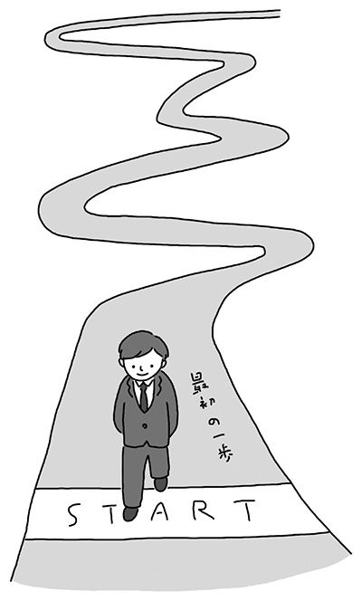

| ストレス一日決算主義 | |
| 山本 晴義 | |
| (2005) | |
生活人新書
ストレス一日決算主義
山本晴義
yamamoto haruyoshi
二一世紀は「心の時代」と言えます。
警察庁の調査によれば、平成一八年度の自殺者は三万二一五五人。同年の交通事故死者六三五二人の約五倍に上り、自殺死亡率は米国の約二倍、英国の約三倍に達しています。自殺に至らないまでも、働く人の心の病気も年々、増える傾向にあります。また、殺人や幼児虐待、少年犯罪など、痛ましいニュースも連日のように報道されています。日本人が持つ「心の闇」が、ここ数年、にわかに浮き彫りにされつつあると言えましょう。
いったいなぜこのようなことになってしまったのでしょうか。
思えば、右肩上がりの経済成長期、私たちはひたすら物質的豊かさを追い求めてひた走ってきました。しかし、その一方で大切なものを見失っていたのも事実です。日本人が忘れ去ってしまったもの──それは、「人間としての生活」「一度きりの人生の大切さ」「自然との調和」かもしれません。
かつて、私たちの祖先は、たとえ乏しい内容であっても、家族でちゃぶ台を囲んで食事をし、精を出して働いた後は、充足して眠りにつきました。空き地では子どもたちが元気に駆け回り、町では近所の主婦たちが立ち話したり、夏の夕暮れ、のんびりと親子が夕涼みしたりする姿があちこちで見られました。人としてあたりまえの生活、あたりまえのコミュニケーションが成り立っていたのです。
ところがいつしか、こうした人々のかわりに、「二四時間働く企業戦士」や「塾通いに忙しく、家族と食事できない子ども」が増えてゆきました。売上や偏差値など、数値目標ばかりが偏重されるようになる一方で、日常の生活は軽んじられていったのです。「周りの人と同じことをしていれば、競争社会を勝ち抜くことはできない」という考え方が、暗黙のうちに浸透していったのでしょう。
その結果、世の中はスピード社会となりました。日常生活を犠牲にして仕事に精を出す光景は何も特別なものではなく、ごく普通のことになってしまったのです。それどころか今では、「あたりまえの暮らしなど、したくてもなかなかできない」という人が大半になってしまいました。
人間としての生活を忘れると、人生の本当の味わい深さは感じられないものです。それだけではありません。本来持っていた免疫力が失われ、ストレスに対しても脆弱化してしまいます。結果的に心身の健康が失われ、心身症をはじめ、ストレス疾患を発症するようになるのです。最悪の場合は重症のうつ病を患い、自殺するケースすらあります。
考えてみてください。「生活」「人生」「命」──これらは英語ではすべて〝Life〟という一語で表現されます。つまり、日々の暮らしを大切にして初めて、充実した人生を生き、命をまっとうできるということでしょう。私たちは「今週いっぱい頑張ったら一休みしよう」「この仕事が終わったら家族とゆっくり食事しよう」などと考え、つい日々の生活をおざなりにしがちですが、そうではなく、毎日を人間としてあたりまえに生きるべきなのです。「働くこと」「食事すること」「眠ること」「休むこと」「体を動かすこと」を毎日楽しみ、家族や隣人との交流を大切にしてください。
新潟中越地震やスマトラ島沖地震の例を見てもわかるように、人間は本来、明日をも知れぬ運命を生きているのです。
どうぞ、「一日決算」の生き方をし、悔いのない人生を送っていただきたいものです。
テレビや新聞、雑誌を見ていても、「ストレス」という言葉を目にしない日はありません。元々は難しい医学用語だったはずの「ストレス」は、今や子どもでも知っている言葉となりました。
生活習慣病に代表されるように、世に蔓延する多くの病気は、その原因にストレスが関係しているとされ、中にはストレスを理由にズル休みをしたり仮病を企んだり、自分に都合のいい手段として利用する人まで登場する始末です。その結果、今度は周囲の人が新しいストレスを抱え込むなど、連鎖的に終わりのない「ストレス・スパイラル」に陥っていると言うことができるかもしれません。
そこで現代人は、このストレスからいかにして逃れよう、このストレスをいかにして回避しよう、と努力するようになりました。もちろんそこには、「ストレスから逃れるためのストレス」という新しいストレスが発生するのですが......。
こうしたストレス・スパイラルを打破するには、従来の思考では限界があります。つまり、「一＋一＝二」という考え方では、この状況から脱出することはできません。よく電車の中で見かける学習塾の広告に「四角いアタマを丸くする」というキャッチコピーがありますが、まさにその考え方が、ストレスからの脱出には必要です。
現代社会に生きている以上、ストレスを避けて通ることは不可能です。日本から離れて、暖かい南の島でパンツ一枚で暮らすことができれば、ストレスもなくなるだろうと考える人はいるでしょう。しかし、実際にはパンツ一枚で暮らしている人たちにもそれなりに悩みや不安があり、そこにもストレスは生まれているはずです。
ではどうしたらよいのでしょう。その答えは、「ストレスから逃げようとしない」ということに尽きるのです。ストレスに苦しめられるのが嫌で、その方策を知りたくてこの本を手に取った読者には、なんとも人を馬鹿にした提言に聞こえるかもしれません。しかし怒らずに、もうしばらく私の話に付き合ってください。
私たちを苦しめるストレスの原因とは、いったいどこにあるのでしょう。それは人によってさまざまで、対象はきわめて広い範囲に及びます。しかし、突き詰めて考えていくと、そのほとんどは「人」と「金」に集約されるのではないでしょうか。そこで、まずはこのストレスの原因の双璧を成す両巨頭のうちの片割れである「金」について、考察してみることにしましょう。
多くの人は「金を貯めたい」と思って努力します。しかし、それがなかなかうまくいかずに失望感を味わったり、将来に不安を感じて、それがストレスとなるようです。その結果、ストレスに起因するさまざまな症状を呈することになります。それはうつ病のような精神疾患の場合もあれば、生活習慣病という結果を引き起こす場合もあります。どちらにしても病気であることには変わりなく、病院に行って治療を受けたり、薬を買うことになります。つまり、「金を貯める」という目標のためにストレスを溜めて、その結果、病院や薬局に金を払わなければならなくなるのです。
金を貯めようとして金を払う。まさに本末転倒です。しかし、心の悩みを聞くことが仕事である私を訪ねて病院に来る患者さんの多くが、そうした、よく考えると不思議な回り道をしていることも事実です。
この悪循環から抜け出すために、私はこう言います。
「ストレスから逃げようとしないでください」
私たちが日常的にストレスを回避して生活することが不可能である以上、その不可能を目標にしていたのでは、いつまで経っても目標が実現されることはありません。つまりストレスは溜まるばかりです。そこで先ほども触れた「四角いアタマを丸くする」を導入して、思い切って「ストレスから逃げない」という考え方を実践するのです。
皆さんに知っておいていただきたいのですが、ストレスは、溜めさえしなければ問題はありません。逆に言えば、適度なストレスは、私たちに適度の緊張感を与えてくれるので好都合なこともあります。
ただし、ひとたび溜まり始めたらこれは問題です。たちの悪い借金のように雪だるま式に膨れ上がり、自分一人ではどうすることもできなくなってしまいます。
「その日のストレスは、その日のうちに」
なんだか年末に流れる家庭用洗剤の宣伝文句のようですが、家の中のヨゴレも人間のストレスも同じようなものです。放っておけば落としにくくなるだけです。そこで、私の唱える「一日決算主義」という考え方が必要になってくるのです。「一日決算主義」とは、ストレスを翌日に延ばすことなく、その日のうちに片付けておくという考え方です。
よく、「ストレス発散は週末のゴルフで」などという人がいます。それで本当にストレスが発散できるのであれば構いませんが、病院に通うようなレベルの人には、とても週末まで待つ余裕などありません。その日一日のストレスを翌日に持ち越さない工夫が必要なのです。
その日のうちに発散できれば、ストレスから逃げる必要はありません。ぐっすりと眠って元気を回復できれば、毎日の仕事や勉強もはかどり、結果的には金が貯まります。ストレスは溜まらずに金は貯まる。人もうらやむ「好循環」ではありませんか。人にうらやましがられるようになればこっちのものです。しばらくはストレスの心配はしなくて済むはずです。
ところで、私の肩書きは「心療内科医」です。
この心療内科という科目は、「心理療法も併せて行う内科」の略で、心身症の専門家です。心身症とは、ストレスが関係した身体の病気の総称で、高血圧・胃潰瘍・円形脱毛症などが代表的な症状（表１）です。ストレスから起こる身体の病気だけでなく、うつ病や神経症なども身体の症状を訴えることが多く、これらの病気も心療内科で診ています。
私の働いている心療内科には、毎日五～六人の新しい患者さんがやって来ます。つまり、毎年新しい患者さんが二〇〇〇人ずつ増えているのです。これはすごいことです。
病気になったら病院に行くのは当然のこと。当然どころか、できるだけ早く病院に行くべきです。しかし、それは「病気になったら」の話であって、その前に心がけることがあります。それは「病気にならないこと」です。
これもある意味では矛盾していますが、私たち医者という職業は、患者さんに来てもらわないことには生活が成り立ちません。医者が生活苦でストレスになり、仕事ができなくなってしまったのでは話になりません。しかし、毎年患者さんが二〇〇〇人ずつ増えていくのも問題です。そこで、ここは心を鬼にして「どうすれば病院に行かなくて済むか」について、書いていくことにします。
不登校の患者さんを診るとき、医師は「なぜこの子は、学校に行けなくなったのか？」という原因を探ります。骨折で整形外科を受診すれば、医師はやはり「何をしていて骨を折ってしまったのか？」を患者さんに質問するはずです。つまり「過去」にさかのぼって原因を究明し、そこから導き出される結果に対して対策を講じることが、一般的な診察の原則です。
ところが私の唱えるメンタルヘルスにおいては、その方法がやや異なります。中でも一番の相違点は、基本的に「過去には目を向けない」ということになるでしょう。
メンタルヘルスで重要なのは、「今」と「これから」です。なぜなら、人間はどんなに頑張っても「過去」を変えることはできないからです（表２）。
もう一つ、メンタルヘルスで目を向けない対象があります。それは「他人」です。この他人という存在も、やはり変えることは不可能です。
つまり、過去と他人という、自分の努力では変えられない二つの要因が悩みの原因として君臨している限り、どんなに頑張っても症状が改善する可能性はありません。
そこで、「変えることができる対象」を考えると、「今とこれからの自分自身」となります。変えることのできない過去と他人について思い悩むのではなく、今の、あるいは将来の自分を変えることで悩みを消していく。そしてメンタルヘルスにおけるカウンセリングの役割は、「あなたは変える力を持っている」ということに気付いてもらうため、サポートをしていくことです。
将来のことを考える時に、過去のことをあれこれ悩む必要はありません。自分では気が付きにくい「その人のいい部分」を伝えて、「これから自分は変わるんだ」「自分は変わることができるんだ」と思ってもらうこと。そして、それを実践してもらうこと。これがカウンセリングの最大の目的です。
最近では「カウンセリング」という言葉も一般的になりました。民間での自己啓発セミナーなどでも「カウンセリング」と称して悩みを聞いたり励ましたりするところがあるようです。もちろん、それで症状がよくなるのなら、その人にとってはいいのかもしれませんし、私がとやかく言うつもりはありません。ただ、病院で行うカウンセリングは、「医療行為」の一部です。病院やクリニックでは「薬」という強力な武器もあります。眠れない人、あるいは眠れないことを悩んでいる人に、精神安定剤や睡眠導入剤を処方すると、「眠れない」という悩みについてはとりあえず解消することができます。人間は睡眠が足りないと、体にさまざまな悪影響を及ぼします。少なくとも睡眠不足が解消できれば、それを取り除いた時点からの治療に取り組むことができるのです。ここが医療の強みと言うことができるかもしれません。

うつ病という病気は女性に多いと思われています。いや、思われているだけではありません。私の外来の受診状況を見ても、男性三～四に対して女性六～七と、圧倒的に女性患者さんが多いのは確かです。しかし、これが自殺者数について見てみると、その割合は逆転します。つまり、うつ病にかかる割合と自殺者の男女比が逆転しています。男性の自殺者のほうが女性より倍以上多いのです。
ではなぜこうした性別による差が出るのでしょう。これは男女の「気質」の差や「環境」によるものと考えられます。私は次のように推察します。
女性は悩みが生じると、誰かに相談して解決しようとする傾向があります。「自己開示」と言って、自分の弱さを人に知ってもらうことで助けてもらおうとすることに、比較的抵抗が少ないのです。相談相手は友だちであったり家族であったり恋人であったりしますが、その中には「医者」も入ります。「医者に相談しよう」と思った人が心療内科を訪ね、この人たちが「うつ病患者数」としてカウントされます。うつ病による受診者に女性が多いのは、こうしたことが関係しているとみて間違いないでしょう。
一方男性は、そう簡単に人に相談などしません。特に「一家の大黒柱」などと奉られている年配の男性は、安易に人に弱みを見せるわけにいかないのです。そこで一人孤独の中で悩み続けます。この時点ですでにうつ病を発症しているのですが、人に弱みを見せたくないから病院にも行きません。適切な治療を受けるきっかけを自ら放棄してしまっているのです。その結果、悩みが自分自身では解決できないところまで達してしまい、「死」という極論に到達してしまうのです。
これはなにも、一家の大黒柱には限りません。若いビジネスマンであっても同じことが言えます。現代の競争社会では、たとえ同じ会社や同じ学校に通う仲間であっても、一度「競争相手」と認識したら、もうその人には相談などできなくなります。単なる「気質」では済まされない社会的要因が根底に流れていると言うことができるのです。
私がメール相談を行っているのも、「一人で悩まずに気軽に相談してください」という呼びかけに、少しでも応じやすくなればと思っているからであって、まずは誰かに相談して悩みを話してしまうことが大切です。もちろん、メール相談でも女性のほうが件数は多いのですが、それでも相談してくれるだけまだいいほうです。誰にも相談することなく、黙って死なれてしまったのでは、医者はなす術がありません。
男性も女性に学んで、気軽に誰かに相談するようになってほしいところです。先にも触れた「気質」という点では、最近はあまり聞かなくなりましたが「大和魂」のような考え方が微妙に影響しているとも考えられます。海外ではお抱えの弁護士を持っていることと同様に、主治医として心療内科医やカウンセラーを持っていることが一種のステータスになっていることもあって、男性でも比較的早期にうつが見つかりやすいのですが、日本ではまだまだそうした環境にはなっていません。
これはある病院での実際の数字ですが、一か月に救急室に運ばれた自殺未遂患者が一三人いたそうです。この内訳を見ると、男性が三人で女性が一〇人でした。自殺未遂に関しては、女性一〇に対して男性三という割合は、非常に妥当性のある数字と言えるでしょう。女性は「未遂」が多いのです。これに対して、男性は本当に死んでしまいます。「女はすぐに『死ぬ死ぬ』と言い、男は黙って死ぬ。そしてどちらも困る」ということになります。女性が「死ぬ」と言う時には男性が支えてあげてほしいし、男性が悩みを抱えてしまった時には、黙って死ぬのではなく、ぜひ誰かに相談してほしいのです。相談することをためらわないでください。
もちろん私たち心療内科医に相談に来られるのは結構なことですが、その前に、夫婦や友人、同僚同士で、利害を超えて気軽に話ができる環境を持つことが理想的です。
会社の上司が気に入らないのであれば、仲間と焼き鳥屋で悪口を言えばいいのです。仕事の不満は不思議なもので、言ってしまえば心はだいぶ楽になり、次の日からはまた仕事に打ち込めるものです。ところが今は成果主義が変な形で導入されているため、同僚といえども「敵」として接しなければならなくなり、上司の悪口などとても言える状況ではありません。「同じ釜の飯を食った仲」という関係がなくなったために、心の中の不満を言う相手もなく、かといって自分自身の中で解決することもできずにいます。その結果、何かをきっかけに突拍子もない行動に出てしまうことになるのです。
最近では、企業内に悩みを聞いてくれるカウンセリングルームを設置しているところも増えてきましたが、企業内だと、そこでの相談内容が人事・労務部門に伝わってしまうのではないかという不安がどうしても先行してしまい、なかなか気軽には行けないようです。会社のカウンセラーに「社長を殺したい」などと相談できるはずはありませんから。
しかし、間違えてはいけないのは、「殺したい」のは気持ちの中のことであって、実際に殺すと言っているわけではないということです。それを放置したり、さらにストレスが加わった時に現実の行動に移してしまって事件が起こるのですから、まだ気持ちの中にある時点で、何らかのケアを受けておけば最悪の事態を回避できるわけです。
ここで、あらためて心療内科のカウンセリングを考えてみてください。ここには「思っていることを素直に言っていい」という環境が備わっています。つまり、何らかの規制がかかっていたために言いたいことも言えないでストレスが溜まっていた人に、思っていることを自由にしゃべってもらうことで、その先の「する」、つまり「行動」を未然に防ぐ役割があります。ですから、不安を感じたら行動を起こす前に、心療内科を受診する、あるいはカウンセリングを受けることを考えてください。
こんな女性患者さんの例があります。彼女は派遣社員としてＡというデパートに勤務していました。そこでは周囲のスタッフともとても気が合い、楽しく充実した仕事ができていたそうです。ところがＡデパートとの契約期限が切れ、彼女はＢというデパートに勤務することになりました。すると、そこでは上司も周囲のスタッフも意地の悪い人ばかりで、精神的に追い込まれてしまった彼女はＢデパートの包装紙を見ただけで吐き気を催すようにまでなってしまいました。そんな状況で働き続けることなど不可能です。
結局、体調不良で倒れてしまい、救急車で病院に運ばれました。各種検査の結果「精神的な問題」を指摘され、私の診察室に連れて来られました。そこで私がしたことは、二人でＢデパートの悪口を言い合った、というものです。そんなことが治療と言えるか！ と怒る人がいるかもしれませんが、これも立派な治療です。その証拠に、彼女は悪口の限りを言い尽くすとすっきりしたらしく、そのまま入院もせずに帰っていったのです。もちろんＢデパートに復職することは無理なので、Ｃという別のデパートに勤務先を変えたところすっかり快復し、今では救急車で運び込まれたことがうそのように、元気に通勤しています。
彼女の治療は「嫌いなＢデパートの悪口を言うこと」でした。今回はたまたま医師である私がその相手をしたから「治療」となりましたが、これが友だちや同僚であれば、治療ではなく「愚痴」で済んだかもしれません。そう考えると、ビジネスマンにとっての「焼き鳥屋での悪口」が、実は救急患者の発生を未然に防いでいる可能性があると言えなくもないことがわかると思います。
そういう意味でも、もっとカウンセラーや心療内科医を身近に感じて利用してほしいと思います。もちろん心療内科では「治療」を行いますが、「病気を治す」と考えてしまうと、ちょっと構えてしまう人もいるでしょう。それよりは、「心の疲れを癒しに行く」程度の軽い気持ちで接してもらえたらよいと思います。
最近では、仕事柄どうしても「表と裏」の顔を持たなければならない芸能人や、あるいは身体的だけでなく精神的にも極限のところで勝負しているスポーツ選手などにも、心療内科やカウンセリングを上手に利用する人が増えています。と言っても、彼らは特に精神疾患やノイローゼにかかっているということではありません。ちょっと心が疲れた時に、上手にメンテナンスをすることで、大きな障害にならないようにしているだけです。かぜをひいたときに、近所の開業医の先生に診てもらうことと同じです。
今後はさらに、一般の人たちにとっても、心療内科やカウンセリングが利用しやすいものになっていくと思います。
表３を見てください。これは厚生労働省による五年ごとの調査で、「仕事をしている人がどのくらいストレスを感じているか」を調べてまとめたものです。平成一四（二〇〇二）年では、平均して六一・五パーセントの人が「仕事上でストレスを感じている」という調査結果でした。もう少し統計を詳しく見ると、部下のいる人は六七・〇パーセント（部下のいない人五八・三パーセント）、一日の実労働時間一〇時間以上の人七七・〇パーセント（六時間未満の人は三八・四パーセント）という結果ですが、私の実感では、これをはるかに上回る八～九割の人がストレスを感じているのではないかと思われます。

しかし、たとえ全体の八～九割の人がストレスを感じていたとしても、残りの一～二割はストレスを感じていないことになります。では、彼らはストレスと全く関わりがないのでしょうか。そのような人たちは、実際には自分が感じていないだけで、周りにはストレスを与えている、つまりストレスの発信源になっている可能性があります。そう考えていくと、ストレスがすべての人に共通した問題だということがわかると思います。
日本の労働人口は約六三〇〇万人。つまり、全人口の半分が働いていることになります。働くことは、とても大切なことです。「はたらく」とは「はた（傍）をらく（楽）させる」ということで、人が働くことにより、周りの人に楽をさせてあげることができ、結果としてその人だけでなく周囲のみんなが生活をすることができるのです。
現代の大リストラ時代において、仕事ができるのがとても幸せだということには、皆さんも異論はないでしょう。働きたくても働けない人を「失業者」と言いますが、完全失業者は二〇〇四年一一月現在で三一一万人もいることを考えると、「働くこと」は、ストレスを引き起こす原因の一つとなる半面、幸せなことでもあるのです。
「心のケア」というのは、以前は個人個人が自分で責任を持つ「セルフケア」が前提でした。しかしここに来て、「自己責任」に加えて「上司が（ラインによるケア）」「職場全体で」「地域や国家レベルで」の三つの要素を加えた「四つのケア」で守っていくべきであるとする国の方針が打ち出されました。
ラインによるケアとは、次のようなステップを踏んで行います。
●第一ステップ＝日頃の気配り
日頃から一人ひとりの部下の健康状態をチェックすることは、考える以上に難しいものです。まずは何気ない挨拶や世間話の中で、普段と違ったところはないかどうかを観察することから始めます。いきなり変化を見つけることはできなくても、毎日見ていれば、変化が現れた時にはたとえ小さなものでも見つけやすいからです。そのためにも毎日の気配りが重要になります。
●第二ステップ＝声かけ
悩んでいる当人は、誰に相談すべきなのか、どのように相談のきっかけを作ればいいのかがわからずに苦しんでいることが多いものです。そこで、そのきっかけを上司から作ることが大切です。「どうしたの？」「なにかあったの？」と声をかけ、気軽に相談ができるような雰囲気作りを心がけましょう。
●第三ステップ＝話を聞く
相談を持ちかけられたら、まずはじっくりと時間をかけて話を聞きます。この時に、話を遮ってはいけません。まずは相談者が気の済むまで話をさせることが重要。結論やアドバイスを急ぐことは禁物です。
●第四ステップ＝つなげる・協力
不安やストレスの問題点が整理され、明確になったら、上司が個人レベルで事にあたるのではなく、産業医や、保健師などの産業保健スタッフや精神科医などの専門家への相談につなげていくようにします。もちろん、現場におけるケアは上司が中心となって行わなければならないので、専門家との連携を密にしながら、問題の解決を模索していく姿勢が求められます。
「ラインのケア」を展開する上で一番重要になるのが「日頃の気配り」です。コンピュータ化、ＩＴ化が進んだ現在では、上司が部下の管理をするためにデータや数字だけを拠り所にするような風潮になっているようですが、これでは心のケアなど到底できるはずがありません。人の心は「数字」では理解できないものです。つねに目で見て、会話をして、顔色や表情の起伏、声の調子などを分析することによって初めてメンタルな状況は把握できます。
朝「おはよう」と声をかける、夜会社を出る時に「お先に失礼します」「お疲れさま」と挨拶する。ただそれだけのことでも、毎日続けることで相手の精神的な疲労度やストレスの溜まり具合は違ってくるものです。日頃からそうしたことを心がけることで、普段とは異なる印象を受けたら「何か心配事でもあるの？」と訊ね、顔色が悪いようなら「あとのことは心配いらないから、とりあえず病院に行ってらっしゃい」と声をかけることができます。
何気ないことなのです。しかしこうしたことが、実はメンタルヘルスの基本であり、精神的な不安を早期に見つけて、ひいては自殺という取り返しのつかない事態を事前に食い止めることにさえつながっていくのです。
こうしたことは、少し前ならほとんどの職場で当たり前のように行われていたものです。しかし、今では同じフロアや隣の席に座っている仲間との会話でさえメールを使って行うようなありさまで、これではとても部下や仲間のメンタルケアなどできようはずもありません。
まるで電子メールを悪者のように書いてしまいましたが、かく言う私もメールを使っている一人です。しかも、さっきはストレスの元凶のように書いてしまったメールを通じて、メンタルヘルスの相談を受けているのです。
電子メールは本当に便利なもので、会ったこともない相手に気軽に相談することができます。そう、この「気軽に」というところがメールの素晴らしいところです。会って話をするとなると、緊張してしまってなかなか本当の気持ちを伝えられないものですが、メールならそれが気軽にできてしまいます。
日本全国、時には海外からも多くの相談事が私のアドレスに送られてきます。その中のメールをいくつか紹介します（プライバシー保護のため、一部改変しています）。
【Ａさん（四〇歳、男性）のメール】
「香港での海外勤務になって約一年が過ぎる四〇歳の男性です。最近、よく眠れない、食欲がない、気分もすぐれないという状態が続いています。理由のない不安感に襲われ、何もやる気が起きません。精神的ストレスからか、胃腸の調子もよくありません。毎日がとてもしんどいのです。ＳＡＲＳの騒動が収まらないなか、三か月ほど前に家族が日本に帰国してしまってからは単身生活。しばらくは家族がいた時にはできなかった語学習得などの自己啓発をしていましたが、次第に気分が落ち込むようになってきました。
そもそも語学は英語がまったくダメで、中国語も日常会話程度しかできません。職場の駐在員は六名しかいないので会話もマンネリ。仕事もワンパターンなのでやりがいを感じることがありません。日々落ち込み、不安感でいっぱいです。自分の性格が生真面目、几帳面、神経質ということもあるとは思いますが、ストレスを発散したくても発散させる場所がないというのも事実です。
いずれにしても、このままではマズイとは思っています。でも、考えれば考えるほど余計に焦りが募ってしまい、かえって落ち込むことになってしまうという悪循環です。日本に帰ろうにも、ＳＡＲＳ問題があってなかなか帰国できないのが実情です」
そこで私は、次のような返信メールを出しました。
「無理しないことです。がんばりすぎないことです。今の自分にできそうなことを、マイペースで少しずつやってみてください。そして、どうぞいつでも悩みをメールで発信してみてください」
海外での一人暮らしはただでさえストレスが大きい上、二〇〇三年のＳＡＲＳ問題では不安がピークになり、こうした相談も多く寄せられました。
ＳＡＲＳだけではありません。海外において予測不可能な事態に遭うかもしれないという不安は、国内にいる時とは比べものにならないでしょう。また国内でも、中越地震を始めとする天災は、どんなに文明が発達したとしても克服できない問題として私たちに襲いかかってきます。家族と離れて、見知らぬ土地でたった一人で生活する単身赴任のビジネスマンにとって、その不安が決して小さなものではないことは容易に想像できます。
ビジネスマンのストレスの原因で、大きなウエートを占めるものに「転勤」があります。それまでの慣れ親しんだ職場から、見知らぬ土地の見知らぬ職場に異動になるだけでも不安は大きいのに、最近では子どもの進学問題などを理由に家族が付いていくことを嫌がるため、単身赴任のビジネスマンが激増しているのです。
メンタルクリニックは、どこも単身赴任による寂しさからくるうつ病に苦しむ患者さんたちで大賑わいです。単身赴任する本人だけでなく、残された妻や子どもだって、夫や父親と遠く離れて暮らすことが楽しいはずがありません。
子どものためにと思って選んだ単身赴任がきっかけで、子どもが非行に走ることも珍しいことではないのです。それぞれに事情はあるでしょうが、簡単に単身赴任をするのではなく、できるだけ家族同伴で異動転勤してほしいと私は思います。もちろん、そうすると子どもが転校しなければならなくなって、今度は子どものストレスが心配だという声が聞こえてきますが、それも考え方次第です。
私自身、子どもの頃に父親の仕事の都合で小田原と函館に引っ越した経験があります。確かに転校した当初は親しい友達もいないので不安でしたが、子どもは大人が考えるよりもよほど社交的で、すぐに打ち解けていきます。逆に親が心配ばかりしていると、子どもの不安を助長するだけです。今では、小田原と函館のいずれの地にもたくさんの友達がいるので、かえって転校してよかったと思うし、この二つの土地は私にとって第二の故郷だと思っています。
見知らぬ土地に引っ越すことには誰でも不安はありますが、そこでポジティブシンキングが発揮できれば大した問題ではなくなります。昔から「住めば都」と言いますが、まったくその通りです。大切な夫や父が何の心配もなく働くためには、家族が揃って支える必要があります。
もちろん、そうした努力もむなしく単身赴任を余儀なくされるケースもあると思いますが、そんな時は、できるだけ家族一緒に暮らしている時と同様に過ごせるように努めてください。朝起きたら「おはよう」、会社から帰ってきたら「ただいま」、夜寝る時には「おやすみ」と挨拶を忘れない。それは簡単なことのようですがとても大切なことです。今は電話もあれば電子メールもあります。毎日のリズムを崩さないように、コミュニケーションを図ってください。家族のコミュニケーションが給与の振込みだけ、などということがないようにくれぐれも注意してください。
【Ｂさん（二八歳、主婦）のメール】
「こんにちは。夫（三二歳）のことでご相談します。夫は最近、会社（銀行）で部署が異動になりました。それまでも、早く帰れるのは週に一度程度で、あとは午後一一時から一二時が当たり前という、とても不規則な生活でした。ところが異動してからは、これがさらにひどくなり、毎日午前二時、三時という状況。しかも、どんなに前夜の帰りが遅くても、翌朝は午前七時に家を出なければなりません。本来は休みのはずの土曜日も出勤し、その土曜日ですら帰宅するのは午前二時。
こんなことを言うと、睡眠不足やストレスとして片付けられてしまいそうですが、夫は異動する少し前から平衡感覚に異常が見られるようになり、つねに揺れているような状態が続いていました。異動後はそれに加えて頭痛が絶えず続いています。目、肩、そして腿までがパンパンに張っています。
実は以前、私の母も同じような状態を訴えていた後、くも膜下出血を起こして亡くなりました。発作の前に相談していた医師は、『大丈夫』と言うだけでした。それなのに母は亡くなりました。そのことを考えると、とても不安になります。何かが起きてからでは遅いのです。せめて検査だけでも受けられればと思うのですが、今のライフサイクルでは病院に行きたくても行く時間さえありません。唯一主人が休める日曜日は、病院も閉まっていますから......」
なんとも気の毒な話です。しかし、こうしたケースも決して珍しくはないのです。このように家族が私に相談を持ちかけてくれただけでも、まだ幸いです。多くは誰にも相談することもできず、悩みを抱え込んでしまっているのですから。
そこで私は、次のような返信メールを出しました。
「ご主人の平衡感覚の異常や頭痛といった症状は、身体がご主人に『こんな生活ではいけない』と教えてくれている〝危険信号〟です。今日からでも生活を健康的なものにする計画と実行が必要です。どんな病気でも同じですが、たとえどんなによい薬があったとしても、健康的な生活が確保できなければ効果は期待できません。大切なのは、健康的な生活を自分で設計するということです。お母さんを亡くされた経験に基づいたくも膜下出血の不安も書かれていますが、心配なのはそれだけではありません。無理な生活は万病の元です。もしご主人の会社に産業医がいたら、相談してみてください」
ビジネスマンの生活を考える時に、切っても切り離せない問題に「残業」があります。私は診療やメール相談、あるいは講演などにおいても、「残業はほどほどにして早く帰ってください」と言っています。しかし、その話をすると、必ずと言っていいほど「周りの目もある中で、自分一人だけがそんなに早く帰れるわけがない」と反論をもらいます。それがわかっていながら、私はここでも敢えて「早く帰るべきだ」と唱えます。この本を読んでいる皆さんも、私に反論したくなりましたか？
私は医者ですが、産業医でもあるので、一応は日本の企業の労働実態を知っているつもりです。もちろん会社にはそれぞれ事情があり、本当に毎晩遅くまでかからないといけない大プロジェクトに関わっている人もいるでしょう。しかし、そんな大きな仕事であれば、必ずプロジェクトが終わった時にはそれなりの休息が訪れるし、そもそも何か目的を持って取り組んでいる時には身体にダメージが及ぶような深刻なストレスに苦しむことはありません。では、どんな人が問題なのでしょう。
それは、工夫をすれば早く帰れるはずなのに、それをしない、あるいはそうすることがはばかられるような雰囲気の職場で働いている人たちです。ストレスに起因するうつなどの症状が出ている人の大半が、そうした「雰囲気」に逆らえないという理由から発症するケースを占めています。
しかし、よく考えてください。私は何も「午後五時きっかりに会社を後にしなければいけない」と言っているのではありません。「せめて六時とか七時には帰れるように頑張ってください」と言っているのです。もし、社員全員が一～二時間の残業をしても仕事が終わらないような状況であれば、それは会社のほうに問題があります。事業内容を見直して、必要な数の労働者を雇用するべきでしょう。
そもそも一～二時間の残業では仕事が終わらないと言い張る人が、無理をして体を壊した時には会社を休むことになります。こんな理不尽な話はありません。無理をして働いたために長期離脱や休職、あるいは転職、退職、最悪の場合にはストレスによる自殺などという事態に陥ることもなくはないのです。自殺となれば、残された同僚たちには大きな精神的ダメージが残り、仕事の効率も落ちるでしょう。
労働力が落ちる上に会社としてはさまざまな費用の負担を強いられるわけで、かえって会社に迷惑をかけてしまうことになるでしょう。「会社のため」などと言っていながら、実は会社の不利益因子となっていることを自覚する必要があるのです。
私は毎朝六時半に家を出て、夕方六時半に家に戻ります。つまり、一日のちょうど半分を仕事に当てて、残りの半分を家で過ごしています。多くの人は、そんな生活をうらやましいと思うかもしれませんが、決してできないことではありません。これが本来の生活の姿なのです。
私の考える理想的な生活とは、一日を三等分する、というものです。すなわち、八時間を労働に、八時間を睡眠に、そして残りの八時間を自分や家族のために過ごすというものです。これこそ現代社会ではなかなか難しいライフサイクルと言えるかもしれませんが、今の「仕事と寝るだけの生活」を見直す上で、ぜひ目標にしてもらいたい時間配分だと思います。この考えを、ちょっとアタマの隅にでも置いておいて、たまに思い出してみてください。決して不可能なことではないはずです。
ここで、ビジネスマンのメンタルヘルスを考える上で重要な位置付けがされる「産業医」という存在について説明しておきましょう。
産業医とは、企業と契約して、その企業に勤める従業員の健康状態を管理する医師のことです。従業員を直接診療する場合もありますが、主な仕事は、従業員の健康状態を把握し、職場環境をチェックすることです。そして、もし従業員の健康に悪影響が及ぶような環境があると判断された場合は速やかな改善を促すことができる立場にあります。Ｂさんのメールにあるように、労働時間の長さが原因と思われる従業員の健康不安については、最も親身になって相談に乗ってくれるはずですし、そうでなければ産業医がいる意味がありません。
Ｂさんの夫が産業医に相談して、万一その医師が「みんなが深夜の二時や三時まで働いているのに、あなただけ帰らせるわけにはいきません」などと言ったら、それは犯罪行為となります。産業医には従業員の健康を守る義務があり、体に変調をきたすまで働いている状態を知った以上は、職場の環境をただす指導をしなければならないのです。
ところが、実はここに大きな問題が横たわっています。モデルとなるような優秀な産業医がいる反面、残念ながら、まだ契約企業の職場における就労状態を正しく把握していない産業医がいるのも事実です。ひどい場合は、形式だけの産業医で、従業員の健康状態や職場環境をまるで把握していないということもあります。
現在の日本では、理由はどうあれ倒れることがあれば、二四時間三六五日、どんな山奥であっても救急車や救命ヘリが出動し、しかるべき病院に運ばれて、手厚い治療を受けることができます。ところが、どんなに具合が悪くても、本人が倒れなければ、たとえ病院の目の前の会社で働いていたとしても、何の治療も受けることができません。つまり現代の医療提供体制のほとんど大部分は「治療」にのみ目が向けられていて、「予防」にはあまり関心が向けられていないのです。
しかし、人間の本当の健康を考えるならば、「治療」もさることながら、「予防」に力を入れるべきでしょう。病気になってから治すよりも、病気にならないようにするほうが医療費もかからないし、日本のように財政難に喘ぐ国にとっても、そのほうが好都合なはずです。現在の政府はそのあたりのことを指摘してはいます。ところが実際の現場レベルでは、そうした考えが浸透しているとは言えない状態です。
国民総医療費は一年間で三〇兆円を超えています。その一万分の一、三〇億円だけでも予防に割いたら、どれだけ多くのことができるでしょう。たとえば、Ｂさんの夫も、脳出血で倒れてしまえば何百万円単位の医療費がかかることになります。しかも、それだけの金をかけても、助かるかどうかはわかりません。むしろ、助からない確率のほうが高いかもしれません。
万が一、不幸にも、亡くなってしまえばいくばくかの保険金が下りるでしょうが、それでは意味がないでしょう。大切なのは病気を未然に防ぐことです。この方の場合はそのチャンスがあるのだから、今のうちにきちんと対策を立てて最悪の状況を回避することが大切です。
そのためにも、Ｂさんの夫は一刻も早く産業医の下を訪れるべきだし、相談を受けた産業医は適切な指導を会社に対して行うべきです。
産業医は、すでに医師免許を持っている者が、さらに専門の教育を受けてその資格を得ることになります。外科でも内科でも皮膚科でも整形外科でも構いません。もちろん精神科の医師も産業医の資格を得ることができます。しかし、「産業医」としては専門の診療科目はありません。「外科の産業医」「脳神経外科の産業医」という分類はなく、「この産業医の元々の専門は内科である」、あるいは「あの産業医は精神科が専門だ」という形になります。
企業の従業員の健康管理をする上で、メンタルヘルスは非常に大事です。産業医になるためのトレーニングにおいて、メンタルヘルスについてはかなりのウエートが置かれています。したがって、あなたの会社にもし産業医がいたとすれば、その医師の元の専門はわかりませんが、最低限のメンタルヘルスについての勉強はしていることになります。
産業医を置くことで特にメンタルヘルスの管理ができれば、企業にとってもメリットとなります。従業員の自殺防止はもちろんですが、生産性向上や職場環境の改善など、企業の活性化にも大いに役立つことになります。もちろん精神疾患以外の各種疾病、特に生活習慣病なども早期に発見して専門医につなぐことができるわけで、その点でも必要性は大きいと言えるでしょう。
間違えやすいので、強調しておきたいのですが、産業医は直接治療をするとはかぎりません。産業医の仕事は、その人の病状を判断して、的確な治療体制の整っている医療機関に紹介することなのです。
また、もう一つ企業のメンタルヘルス関連で知っておいてほしい職種に「産業カウンセラー」があります。これは、産業医が医師の立場で指導するのに対して、もっと従業員に近い立場から、心の悩みの相談を受ける職種です。もちろん誰でもできるというものではなく、やはり専門の教育とトレーニングを積んで認定を受けた人がその職に就くのですが、ここ数年で急激にその数が増えています。現在全国で一万人がこの資格を持っており、それだけ社会的なニーズが高いことがわかります。
通常のカウンセラーは、大学で臨床心理学を学ぶなど、当初から医師とは独立した立場でカウンセリングを行っており、専門的な教育を受けていますが、産業カウンセラーになるにはそうした学歴は必ずしも必要ありません。それよりも、実際に企業の人事労務などを経験しているといった実務レベルに則した経験がものをいう資格です。認定を得るためには、「人の話を聴く」というテクニックを中心に広範囲な専門知識を学ぶことになりますが、それは特に職場内において重要な役割を果たします。
たとえば課長が産業カウンセラーの資格を持っていれば、その部下の従業員たちは安心して相談ができるわけで、その課における従業員の精神的な不安は他に比べれば低くなるはずです。ストレスが蔓延する現代の日本企業においては、産業医や心療内科へのニーズの高まりもさることながら、こうした産業カウンセラーのような、草の根的な取り組みが意外に大きな効果を招くのではないかと私は考えています。
また、先にも触れたとおり、産業医は一応はメンタルヘルスを学んではいるものの、本職である元の診療科はさまざまで、必ずしも心の病気を得意にしているわけではありません。そんな時に産業カウンセラーがサポート役として付けば、かなり効果的な働きが期待できるのではないかと思います。「産業医＋産業カウンセラー」というペアで従業員のメンタルヘルスを診ていくことが、今後の大きな流れになっていくのではないかと思います。
既述しましたが、現代人は日常における時間配分がうまくできないように思います。それは、ビジネスマンであればどうしても仕事に極端な比重をかけてしまう傾向にあるからです。その結果、自分自身や家族と接する時間が減ってしまい、そのために精神的なゆとりをなくしてしまっているのです。
しかし、「仕事が忙しいから家族のことを考えられない」という声は、本当なのでしょうか。そんな働きすぎのビジネスマンでも、結婚前の恋愛期間中は、うまく時間をやりくりしてデートをしていたはずです。もちろん、独身時代と比べれば、社内的な役割や肩書きも変わっているでしょうから、それなりに事情も違うのかもしれませんが、そこまで家庭をないがしろにしなくてもいいように思えるのです。
ところで、最近厚生労働省もようやく重い腰を上げて、「残業をしないで早く帰るように」と言い出しました。しかし、実はこれ、従業員の過労防止やストレス回避を目的にしただけではなく、少子化対策がもう一つの狙いだったのです。会社で遅くまで残業するよりも、早く帰って子作りに励んでほしいというのが、政府の本音なのです。これは、とても重要なことだと私も思います。
「心を亡くす」と書いて「忙」になりますが、反対に「心が生きる」と書いて「性」となります。つまり、心を生き生きさせることがセックスです。性欲は、食欲と同じく動物が持っている本能です。その本能がうまく満たされないと、当然体は「異常」な方向に向かい始めます。痴漢やレイプといった性犯罪は、そうした異常な性欲の成れの果てであり、社会病理と言えるのかもしれません。
そして、ストレスフルな生活を送っている以上、いつでも「異常」な方向に進んでしまう危険性を孕んでいることは認識しておく必要があるでしょう。
最近では地方の自治体レベルで、地元の工業団地に大手企業の工場を誘致するケースが増えているようですが、その際にもこうした点を考慮すべきではないかと思います。つまり、地元採用においては残業を極力少なくして、夫を早く家に帰らせるということを売りにするのです。
残業ばかりの会社では、夫の帰りが遅くなるので妻たちにとっては寂しい話です。それが原因で労働力が確保できなければ、せっかく誘致に乗って工場進出をしても生産性は上がりません。そこで企業側でも、従業員一人ひとりがまさに生き生きと生活できるように、ワークシェアリングなどを上手に導入して残業を減らす努力をすべきです。それによってストレスが軽減し、従業員のメンタルヘルスが保たれれば企業としての生産性も向上するはずです。働かせるだけ働かせて、動けなくなったらクビという考えは、もはや許されない時代です。
「亭主元気で留守がいい」という宣伝文句が通用したのは、バブルの時代までです。
仕事が忙しくても、それなりに給料が振り込まれているならば、家で待つ妻子も納得していたかもしれません。
しかし、「給料増」が見込まれない上、共働き家庭が増えているこの状況では、この宣伝文句も通用しません。
残業で疲れ果てて帰宅するような状況では、子どもの教育、老親の介護、近所づきあい、妻の小さな愚痴などのさまざまな家族の相談に乗る余裕は生まれません。口がきけないほど疲れていれば、自分自身の悩みを相談することもできないでしょう。「うるさい、疲れているんだ、寝るぞ」という、一昔前のホームドラマにありそうなセリフも、今では通用しません。
「定年まで待て」「定年になったら家事も手伝おう、旅行にも行こう」では実は遅すぎるのです。中高年の離婚トラブルは増加する一方ですが、この原因は経済的サポーターにはなっていても、精神的サポーターにはなれなかったことによるものなのです（表４）。
妻から言い出す熟年離婚で、妻は一〇歳若返り、夫は一〇歳老け込むと言うのは、うそではありません。そうならないためにも、現役の時から家族を大切にし、共有する時間を増やしてお互いが精神的な支えになっておくことが大切です。これからは人生八〇、九〇年の時代です。定年後の二〇年、三〇年をどう過ごすかは、現役時代から始まっていると言えます。
もし読者のあなたがすでに会話のない夫婦なら、まずは三分でも四分でも、お互いにお互いの話を黙って聞くことから始めてみましょう。
【Ｃさん（二五歳、女性）のメール】
「職場の先輩に対して強い憎しみを持っています。殴りたくて仕方ありません。このままだと実行してしまいそうです。とはいえ、今の仕事をやめるわけにはいかないし、人手が少ない職場なので休むこともできません。とても苦しいです。助けてください。お願いします」
これに対して私は、次のような返信メールを出しました。
「メールを拝見しました。先輩が殴りたいほど憎らしいのですね。その気持ちは私にもよくわかります。誰にでも気に入らない相手はいるものだし、そこに憎しみが生まれることは人間としておかしなことではありません。でも殴ってはいけませんよ。殴るのは枕くらいにしておいてください。私はそんな時、走ったり、泳いだり、歌ったり、踊ったり、しゃべったり......いろいろなことをして気を紛らわせます」
たくさんの人間が生活しているこの世界で、たしかにどう頑張っても思うとおりにならないことはあります。どんなに努力しても好きになれない同僚がいる。どんなに思いを伝えても成就しない恋に苦しんでいる。どんなに理解し合おうと努力しても夫婦関係がうまくいかないといったことは、誰にでも起こりうることです。
そして、私たち医師は、そうした現実にある状況を修正することはできないのです。できることといえば、その状況に対峙している人の話を聞き、「こんな選択肢もあるのではないでしょうか？」と提言をすることくらいです。しかし、本当に思い悩んでいる人は、その「選択」ができないことも事実です。
ちょっと考えてみてください。
ａ 会社に、どうしても好きになれないやつがいる。そいつの顔を見ていると殺したくなる。
ｂ 上司に嫌われて不条理な扱いを受けているが、文句が言えない。いっそ死んでしまいたい。
ｃ 妻が（夫が）自分のことを相手にしてくれなくて、寂しくて仕方がない。家出をしたい。
どれもほとんどの人が多かれ少なかれ持っている感情と言ってもよいでしょう。しかし、多くの人はまた、ストレスのはけ口も持っていて、うまい具合に末尾の一文を行動に移さずに済んでいるのです。
しかしうつ病の人は、そのはけ口を見つける視野が狭まっているため、考え方も後ろ向きになりがちです。そして、その最たるものが「私なんてこの世にいなければいいんだ！」という考え方です。
そこでどんな悩みでも構いませんから、最後の一文の前に「今は」と入れて考えるようにしてみてください。
Ａ 会社に、どうしても好きになれないやつがいる。「今は」そいつの顔を見ていると殺したくなる。
Ｂ 上司に嫌われて不条理な扱いを受けているが、文句が言えない。「今は」いっそ死んでしまいたい。
Ｃ 妻が（夫が）自分のことを相手にしてくれなくて、寂しくて仕方がない。「今は」家出をしたい。
これでわかるように、これらの現象は「今」のことです。これから先の長い生涯にわたって今の現象が続くわけではありません。今は殺したくても、今は死んでしまいたくても、明日は、来週は、来年はどうなっているかはわからないのです。
そして、もっと重要なことは、現在が最後ではないことです。本気で死ぬ気になれるのであれば、死ななくて済むはずです。会社が嫌ならば辞めればいい。夫婦関係が我慢できなければ離婚すればいい。それらは極論かもしれませんが、死ぬよりははるかに現実的な選択です。
あなたにはまだ「最後の手段」が残されています。それは人生を終えることではなく、死ぬ気になって嫌な対象から逃げることです。そう考えれば、もしかしたらその前にできることがあるかもしれません。一人で考えてもいい考えが思いつかない時には、遠慮なく心療内科の扉を叩いてください。きっとお役に立てることがあるはずですから。
【Ｄさん（年齢、性別不詳）のメール】
「何をしていても生きがいがなくつまらない。死にたいです」
たったこれだけが書かれたメールが届きました。これが診察室での診療であれば、年齢、男女、顔の表情などを見て「うつ病だろうか。それともノイローゼだろうか」といったある程度の察しはつくのですが、メールではそこがわかりません。そこで、次のような返信メールを出しました。
「メールを拝見しました。もう少しあなたのバックグラウンドをお話してみてください。年齢、お住まい、家族構成はどうですか？ いつ頃から何について悩んでいるのでしょう？ お返事お待ちしています」
するとすぐに返信がありました。
「三年前に海外より帰国してから、急に生きる気力を失ってしまいました。人生やり尽くした感でいます。生きていてもつまらないので無気力になり、自殺を考えます。生きるって一体何ですか？」
この質問には、正解はありません。それぞれが違う解答でいいのです。たとえそれが「結婚」でもいい、「大金持ちになる」「世界的なファッションモデルになる」といった野望もあれば「家族が幸せであればそれ以上のことは望まない」という慎ましやかなものでもいいでしょう。
自分にとっての「生きる」とは何か。その答えは人によってそれぞれ異なり、そしてどんな答えであっても構わないのです。大切なのは、自分にとっての生きがいを持つことです。
なぜかと言うと、生きがいを持っていないと、ストレス社会の中で「なぜ生きているのか」がわからなくなってしまうからです。言い換えれば、生きがいを持っていることこそが、うつ病発症の予防になります。そして、「うつ」という症状そのものは薬でよくなります。
「生きている理由がわからない人は、集まって一緒に死のうよ」などというネット心中のようなものは言語道断です。
とにかく命を大事にしてほしいのです。
Ｄさんに対して、私は次のようなメールを返しました。
「つらいご様子が痛いほど伝わってきます。何らかの力になれるとうれしいです。死にたいという気持ちがあるようですが、これは多分、うつ状態によるものと考えられます。ぜひお近くのメンタルクリニック（精神科、神経科、心療内科など）の専門医を受診することをおすすめします。以前は海外で頑張っておられたと推測されます。専門的な治療（薬やカウンセリング）で、今のつらさは軽減されるのではないかと考えられます。お近くのメンタルクリニックを週明けにでも受診してください」
このメールを送ったのは土曜日の午後です。ここで「週明けにでも」という部分に重要な意味があります。なぜ、「今すぐに受診を」と呼びかけなかったのかと思われたのではないでしょうか。実はこれには訳があります。この時点で「今すぐ」と書いてしまうと、おそらくＤさんはすぐにクリニックを訪ねるでしょう。しかし、土曜日の午後は、たいていの医療機関は休診です。そうなると、「行けと言われて病院に行ったのに、どこも閉まっている。やはり自分はこの世にいないほうがいいのではないか」と考えてしまう危険性があったのです。
うつになる人は、圧倒的に真面目な性格であることが多いことはよく知られるとおりです。そういう几帳面な人であれば、「月曜に受診してください」と言えば、きちんと月曜日に病院に行くでしょう。つまり、「週明けに受診してください」と書くことで、「この土日には死なない」という約束をさせているわけです。
翌週の月曜日に私は、Ｄさんからのメールを見ました（すでに土曜日に返事が来ていたのですが、私はメール相談は病院でしか行っていないので、実際に見たのは月曜日でした）。
「ありがとうございます。すでに精神科には半年ほど前から通院しており、薬を服用しています。実際のところは自殺願望はあるだけで、行動はできないと思います。ご迷惑をおかけしました」
このたった三行の短い文面の中に、うつの人の特徴が実によく出ています。
「ありがとうございます」などというお礼の言葉は、会ったこともない相手に対してなかなか書けるものではありません。しかも最後は「ご迷惑をおかけしました」で締めくくっています。それだけ周囲に対して気配りのできる常識人なのです。このメールをくれた人は、すでに専門医を受診しているとのことで、私は安心しました。そして、「メールをありがとうございました。必ずよくなることを信じてください。一か月後にまたメールをください」と返信しました。
これも一か月間は死なない約束です。
三か月後、久しぶりにメールが届きました。
「ご無沙汰しております。最近は強い自殺願望はないものの、『死にたい』という気持ちは常にあります。生きていることに喜びを感じられなくて、この先特にやりたいこともなく、また自分に自信が持てずに無気力でいるような状態です。仕事はどうにかやりくりしていますが、休日などは何もする気が起きずに寝てばかりです。この先、生きていくことが不安で仕方がありません。何か目標が見つかればよいのですが、まるで見当がつきません。今は生きるのがつまらなくて、つらいだけです」
Ｄさんには今、生きがいや働きがいがないのでしょう。それでも、最初にメールを送ってきた頃よりは、かなりよくなっているように思えます。
私は次のような返信メールを出しました。
「あなたのうつは、時間とともにきっとよくなっていくでしょう。でも、うつという病気は、たとえよくなっても、生きがいがないと再発する危険性があるのです。だから、ぜひ生きがいを持ってください。生きがいを持つことが今のあなたの状態をよくしてくれるはずだし、その後の生活を豊かにしてもくれます」
それにしても、「生きる」とはいったい何なのでしょう？ その答えは、すぐに出さなくてもいいのです。「生きるって何だろう」などとつねに考えていると死にたくなるから、考えなくてもいいのです。しかし、たまに考えることがあれば、そんな時は「生きがい」「働きがい」について考える機会として捉えてみてください。どんな時でも、何事もポジティブな方向に向けることが大切です。
現在、一年間の自殺者数は、毎年三万人を上回っています。二〇〇三年には、ついに三万四四二七人に達してしまいました（警察庁発表）。
三万人がどの程度の数字なのかすぐにピンときますか？ 横浜ベイスターズの本拠地、横浜スタジアムの観衆が満員になると、ちょうど三万人です。最近は野球人気の凋落で、巨人戦でも横浜スタジアムはなかなか満員にならなくなりました。ということは、巨人戦の観衆ですら一年間の自殺者数に満たない、それほどたくさんの人が、毎年自らの命を絶っているわけです。
しかも、この「自殺者三万人」という数字には、一つのトリックがあることをご存知でしょうか。数年前に、上方落語の人気者だった桂枝雀さんが自ら命を絶ったことを覚えている人は多いでしょう。上方に限らず、日本の落語界（と言っても落語は日本だけにしかない古典芸能ですが）にとって計り知れないダメージを与える大事件でしたが、この枝雀さんは統計上では「自殺者」にカウントされていないかもしれないのです。
統計上での「自殺者」とは、自殺を図った時点から原則的には二四時間以内に死亡した人をさし、二四時間経った時点で生存している場合は、別の病名の死因が載せられることが多いのです。交通事故の死亡者数の統計も二四時間以内に亡くなった人の数であり、それ以降に死亡しても統計では、「重傷者」あるいは「負傷者」としてカウントされます。自殺を図った人のすべてが「自殺者数」として統計上、公表されているわけではないのです。そう考えると、この三万人という数字が氷山の一角であることが理解できるのではないでしょうか。
たとえ氷山の一角とはいえ、自殺者の数は年々増加の一途を辿っています。一九九七年に「自殺者、一〇年ぶりに二万四〇〇〇人を超す」というニュースが流れた翌年、あっという間に三万二八〇〇人に激増し、これが原因で日本人男性の平均寿命が減少に転じてしまいました。これはまさに社会問題そのものです。
自殺者の年齢を見てみると「四〇歳以上」の中高年男性が全体の四割を占めています。このことは、仕事上でのストレスが、現代の「自殺時代」の原因となっていることを示していると言えるでしょう。借金、事業の不振、生活苦、失業、就職難など、男性たちを取り巻く環境はきわめて悲惨な状況です。もちろん誰もが「命より尊いものはない」ということはわかっているはずです。しかし、実際にその状況に置かれた人にとっては、そうした常識や理性は通用しません。
民間企業出身の、五〇歳代の小学校校長が人間関係を苦にして自殺したというニュースが物語るように、たとえどんなに優秀で常識のある人格者であっても、仕事に疲れ果てた時、あるいは自分を支えてくれる人がいなくなってしまった時には、自ら命を絶ってしまう危険性を持っています。
医者は病気やケガを治す手伝いをするのが仕事です。その立場から言わせてもらうなら、自分から死ぬなどということは絶対にしてはならないのです。
何も私は二〇〇年も三〇〇年も生きろと言っているわけではありません。長くても一〇〇年もすれば、人間は自然に死ぬようにできています。永遠に生きたくても、誰もがいずれは必ず死ぬのです。だからそれまでは、自分から死ぬようなことだけはしないでほしい、寿命をまっとうしてほしいのです。
人生に嫌気がさしたから死んでしまおうという気持ちはわからないでもありませんが、実際に死のうとすると、それはまさに「死ぬほど怖い」ものだと思います。
自殺となると、一人で人目につかないようにひっそりと、あるいはかなわぬ恋を成就させるために二人で無理心中ということはあったでしょうが、最近ではそのやり方にも変化が生じてきているようです。いわゆる「ネット心中」と言われるもののように、インターネット上で一緒に死ぬ仲間を募り、何人かで車の中で練炭を焚いて死ぬというケースが増えています。
なぜ死ぬのに仲間を集めるのか、という本当の理由については、今後の研究課題になると思いますが、おそらくは「赤信号、みんなで渡れば怖くない」的な考えによるところが大きいと推察されます。
ここで一番怖いことは、「死ぬ」という方向に向って仲間意識が芽生えてしまうことです。周囲の親しい人に相談することなく、それでいてネット上で知り合った他人とは腹を割って話ができる、ということです。ネット上のやりとりだけで、会ったこともない相手と、お互いに死への共感が高まって「みんなで死ねば怖くない」という結論に至ってしまう。これは非常に危険です。
相談する側だけでなく、される相手もうつ病なので、健康な人なら絶対に言わない「死んだほうがいいかも」などというアドバイスをしてしまう。言われたほうも「この人は私のことをわかってくれる」と感じてしまい、「じゃあ一緒に死のう」となるのです。
インターネットは、使い方次第では本当に便利なものです。しかしそれは、自殺志願者にとっても便利なツールと化してしまうのです。一人では怖くて死ねない人がネットで呼びかけると、簡単に「一緒に死のう」と賛同してくれる人が集まってしまいます。
私が「メール」という手段を使って相談を受けている一つの理由には、そうしたネットに依存する人たちの相談相手として「私を」選んでもらうという意味もあるのです。
実際に心療内科や精神科に行くのは怖いけれど、メールなら腹を割って話ができるという人も少なくありません。そんな時にまず私のメール相談で安心してもらい、気持ちに余裕ができたら病院に行ってもらえればありがたい。そのためのワンクッションとして、私のメール相談が役立てられるのであれば、こんなにうれしいことはありません。
ところで、交通事故によって一年間に死亡する人の数を知っていますか。二〇〇三年の交通事故による死者数は七七〇二人。実は交通事故による死者は、一九七〇年代はこの倍の一万七千人でした。これを見てもわかるとおり、交通事故の犠牲者の数は、減少傾向を辿っています。
交通事故死はなぜ減ったのでしょうか。「信号機が増えたから」あるいは「エアバッグが普及したから」と言う人もいるでしょうが、私はそれだけではないと思います。もちろん、危険な交差点に信号機が設置されるのは大歓迎だし、エアバッグによって命を救われた人が大勢いることも事実でしょう。しかし、そうしたことよりももっと事故死者数減少に働きかけた要因は、「国民の意識が変わった」ことによるものではないかと私は考えます。
以前は、シートベルトを締める人は一部の「安全マニア」のような人だけでした。また、少しくらい酒を飲んでも、近くであれば無理に運転して家に帰る人も珍しくはありませんでした。しかし今はどうでしょう？ ためしに大きな通り沿いに立って、道行く車の中を覗いてみるとわかると思いますが、シートベルトをしていないドライバーを探すのは至難の業です。もし何かの理由で、車で来ているのに酒の席に参加せざるを得なくなった人がいたとしても、以前のように「乾杯だけ」と言ってビールを飲む人はまずいません。「車なので......」と言ってウーロン茶を注文し、またそれを「無粋だ」などと非難する人もいなくなりました。さらに最近、携帯電話をかけたままの運転の罰則が法律で決められました。
こうした変化は何によるものなのでしょうか。そう、これこそがはまさに「国民運動」に他ならないのです。
もちろん、罰則の強化など、法整備が背景にあることは事実です。しかし、国民全体が「シートベルトは締めるもの」「飲酒運転はしてはいけない」「運転中は、携帯電話を使わない」という意識をここまで徹底して持つに至ったのは、国を挙げての大ＰＲ作戦が功を奏した結果なのです。そうした国民運動の成果として、現在の「交通事故死者数減少」という素晴らしい結果を生みだしたのです。
振り返って「自殺」についてはどうでしょう？ これまで「自殺をしてはならない！」という国家的な呼びかけがあったでしょうか？ 自殺がよくないことは、誰でも知っています。しかし、実際には毎年三万人もの人が自殺をしている。つまり、いけないこととは知りながらも、自殺せざるを得ない状況に追い込まれているのです。
それでも自殺はしないでほしいのです。今こそ、どうしても自殺せざるを得ない状況にある人たちに翻意を促すことが早急に必要なのではないでしょうか。
現在では政府や医師会などでも、自殺予防に向けた本格的な取り組みをスタートさせています。厚生労働省では「自殺予防の十箇条」（表５）を作り、自殺を考えている人に翻意を促すとともに、周囲がそうした自殺志望者の危険なサインを早期に読み取り、実行に移す前に未然に防止するような体系を整えようとしています。
自殺を未然に防ぐためには、さらに国民的な「自殺防止キャンペーン」を展開しなければならないでしょう。また、周囲が「うつ」を早期に見抜くことが不可欠です。原因不明の体の諸症状、いわゆる自律神経失調症と言われる症状がある場合には、うつであるケースが少なくないので、こうした時点での受診ができれば非常に理想的と言えるでしょう。
韓国のテレビドラマ「冬のソナタ」の大ヒットによって「韓流ブーム」という社会現象が起きました。日本にとって最も近い外国である韓国ですが、これまではさまざまな問題があって、本当の意味での文化交流ができないでいたところに、こうしたテレビドラマがきっかけで国民同士が親しくできるようになったことは、とても素晴らしいと思います。
ところで、一つの病気に対する罹患率を国際的視野に立って比較する時に、単純に患者数で比べたのでは分母の国民人口が異なるために正しい比較にはなりません。そこで「対一〇万人」という比較の仕方をすることが一般的となっています（表６）。自殺は病気ではありませんがこの項目について、「対一〇万人」での数を比較してみると、日本は世界で一〇番目に多いという結果になっています。日本の最近の記録では、二〇〇三年で二七・〇人、その前年が二五・二人でした（警察庁発表）。これに対して韓国では一〇年前までは一〇人以下しか自殺者が出ていませんでした。しかし、最近になって韓国でも急激に自殺をする人が増え、一五人を超えているというのです。おそらくは極端な競争社会がきわめて短い期間で構築されていった歪みが、こうした結果を招いていると言えるのではないかと推測されます。同時に、結果だけで評価されてしまう偏差値教育の弊害、被害者と言うこともできるでしょう。
今もそうでしょうが、少し前までの韓国は、人情味がある社会でした。それを象徴するものが「冬ソナ」です。「冬ソナ」は、韓国が生んだ最高傑作のドラマということができるでしょう。日本でも大ヒットしましたが、私は世界的にも大ヒットするだけの要素を持った素晴らしいドラマだと思います。なぜなら、このドラマで一貫して語られているのは「愛」や「生きる」といった、昨今の日本などではなかなか取り上げられることのないテーマだからです。
もしこれが今の日本で作られたら、生きるのではなく死んでしまう、つまり「心中」になってしまうのではないでしょうか。あれだけの苦難を乗り越えて生きていくことは非常に難しいし、当人にとっても大きな苦難です。死んでしまったほうが簡単だし、日本のドラマ作家であれば、簡単に死を選んでしまうかもしれません。
しかし、以前は違いました。たとえば一九八三年のＮＨＫ朝の連続テレビ小説、「おしん」などはどうでしょう。今もなお世界中にその名が知られる日本を代表するドラマですが、ここでのテーマは「我慢」に尽きました。この「我慢」というテーマは、国に関係なく人間に共通して共感を得られるものであり、世界数十か国でヒットしたのもそうした普遍的なテーマを上手にドラマ化したことによるものなのでしょう。
今の日本人には「愛」や「生きる」というテーマが希薄です。しかし、それを必要としていないわけではなく、心の中では欲しているのです。だからこそ「冬ソナ」を見て涙を流し、それが高じてドラマの中のヨン様に本気で恋してしまうのです。
日本人の心の隙間を埋めるのにピッタリだったものが「冬ソナ」だったのです。
今後韓国では日本並みに自殺者が増えることが懸念されています。日本ではすでに「いのちの電話」やメール相談といった予防策の整備が進みつつありますが、韓国ではこれからです。そうしたことで見本になるのは本来うれしいことではありませんが、その意味において日本は進んでいると言えます。せっかくそうした制度や環境が整っているのだから、使わない手はありません。ぜひ有効に利用して、自殺を未然に防いでほしいと思います。
新しいツールができると、すぐにそれを使った商売が誕生するもので、今はこうしたメールでの医療相談を専門に行う組織があるそうです。メールによる相談が三往復で六〇〇〇円程度だそうで、この金額は、病院に行くのにかかる交通費や、病院に行くために会社を休まなければならないことなどを考えると安いのかもしれません。
しかし、あくまでも、医療の基本は「マンツーマン」の対面式の診察です。病気の診断と治療は、実際に医療機関を受診し、国家資格をもった医師が直接行うもので、メール相談は、その橋渡しをするものと位置付けています。治療を受ける必要があるかどうかを医師である私がアドバイスするのみで、このメールのやり取りは、あくまで「相談」だということです。私の場合は、全国の勤労者とメールでつながっていて、相談を受けることができます。しかし、私自身はメールを「相談手段」として考えてはいるものの、直接的な治療としては考えていません。
実際の診療はその方が行かれた医療機関の医師が行います。このことは、ぜひ理解しておいていただきたいところです。
さて、うつ病で会社を休職し、治療に専念した場合、今度はいつ復職するか、そのタイミングが重要です。
せっかく治療が効を奏しても、スムーズに職場に復帰ができないのでは意味がありません。もちろん、職場復帰だけが治療の目的ではなく、場合によっては（職場や仕事内容がストレスの原因であれば）、その職場に戻らないことが最終目的になることもありますが、復帰ができるのであれば、それに越したことはありません。その際に問題になってくるのが、職場側と医療提供側との考え方の違いです。
職場側からもらうリクエストに「完全に治ってから戻してください」というものがよくあります。これを聞くと私などは、「ならばあなたは完全なのか？」と言い返したくなるのですが、しかし、落ち着いてよく考えると、彼らの言い分もわからないわけでもありません。
長らく治療の名目の下で会社を休まれて、ようやく帰ってきたと思ったら一週間や一〇日で再びリタイアされたのでは、何のために治療を受けてきたのかわからないと思うのも当然でしょう。しかし、これは医者の側も同様で、「せっかく治ったのにたったの一週間でまた悪化させるなんてどういうつもりだ」という気持ちも出てくるものです。立場変われば......というところです。しかし、そんな立場の違いで当の患者が翻弄されたのでは困ります。お互いがそれぞれの立場で何をすれば「一番よいのか」を考える必要があるでしょう。
私はそんな時、職場にも本人にも、段階を経て復帰するようにすすめます。治療前の労働を一〇〇とした場合、会社を休んで治療に専念していた時の労働は当然の事ながらゼロです。ゼロをいきなり一〇〇にするのは、健康な人にとってもかなりの負荷を持たせるもので、まして直前まで治療を受けていた人にとってその負担は大きすぎます。そこで、いきなりフル回転をさせるのではなく、三割、五割、七割......とリハビリ的に労働量を増やしていき、身体的にも精神的にもある程度安心できる状況になってから、復帰することが大切です。
そしてもう一つ、職場側にも本人にも認識してほしいのは、治療で元に戻すことは可能でも、元の状態以上に伸ばすことはできない、ということです。
以前は一〇〇の仕事をしていたとしたら、治療でよくなった後にできる仕事はやはり一〇〇です。そこに一五〇や二〇〇を求めると、再びストレスを感じて「要治療」となってしまいます。治療前にできなかったことまでができるようになる治療などはありません。それを求めるなら、「治療」ではなく「修行」にでも出なければなりません。職場側の期待もわからなくはありませんが、それを押し付けてしまってはいつまで経っても同じことの繰り返しになってしまいます。職場環境が原因で病気を作ってしまったのなら、その環境を調整していく努力が職場側に求められることも十分認識してもらう必要があります。
しかし、こうしたストレス社会を巡る諸問題は、ある意味では予測できたことと言えるのかもしれません。バブル景気の最中には、企業は「人さえいればいい」という雇用目的をあらわにしていたことは事実です。誰でもいいからとりあえず人数だけ確保したいという思いで、資質は後回しにした求人をしていました。ところがその後にバブルは弾け、世の中が量より質を重視する傾向になった途端、人数集めで雇い入れた従業員を冷遇するようになりました。
もちろん、バブル時代に努力もせずにぬくぬくと生活していた従業員の側にも問題はありますが、それを含めて現在の雇用の不均衡ぶりはある程度は予測できたことといえるのです。
ならば、現状の厳しい雇用状態の中で入社してきた人なら安全かというと、これまた問題があります。つまり、厳しい入社競争に勝ち抜いてきた人、あるいはリストラ競争に勝ち抜いてきた人は、自分を殺してでも企業のために尽くすというタイプで、それはそのままうつになりやすいタイプと言うことができるからです。
今はまだ症状が出ていなくても、企業にとって優秀な人材ほど、うつに陥る危険性を高く孕んでいることを、企業も、そしてそこで働く従業員、すなわち自分たち自身も、知っておくべきでしょう。
昔から「病は気から」とよく言われますが、これは本当です。身体の病気や症状は、かなりの確率で心の状態と関係があることは、科学的にも認められています。興奮すれば血圧は高まるし、不安や心配事から腹痛や下痢を起こす（これには「過敏性腸症候群」という立派な病名まで付いています）などという経験は、誰にでもあることでしょう。そこで、ここでは、「身体と心のリンク」について説明していきたいと思います。
九〇歳を過ぎた今も現役医師として活躍中の聖路加国際病院名誉院長の日野原重明先生が、四〇年も前に行った研究があります。ある横綱の後援会会長の、相撲観戦前後の血圧変動を測ったところ、相撲を観る前は一四〇と正常域だったものが、仕切り開始時には一九〇、時間一杯で二〇〇、贔屓の横綱が勝負に勝った時には二一〇まで血圧が上がっていたというのです。相撲を観て興奮するのは「心の状態」です。一方の血圧が上がるのは「身体の状態」です。つまり心と身体は、密接に関係していることが、この調査からわかったのです。
しかし、この調査結果から「相撲は観る者の血圧を上げる危険なスポーツだ」と結論付けるわけにはいきません。なぜなら、相撲を観ても興奮しない人もいるからです。
小泉純一郎首相は、二〇〇一年の夏場所で、けがを押して二場所ぶりに優勝した貴乃花の相撲を観て「感動した！」と発言し、支持率が高くなったことがあります。しかし同じあの勝負を観ていて「まるで感動しなかった」人もいることでしょう。大切なのは、相撲を観るだけで血圧がこんなに変動する人がいる、ということです。一方で、同じ条件でもなんでもない人がいることを忘れてはならないのです。
もう一つ例を挙げて説明しましょう。胃潰瘍や十二指腸潰瘍は、粘膜が炎症によってただれた状態になったもののことで、痛みを伴います。胃潰瘍の原因はピロリ菌と言われていますが、胃潰瘍は、元々は「大人の病気」とされていて、ストレスの影響が大きいのも事実です。すなわち、「大人の病気」と言われていたくらいですから、子どもには胃潰瘍ができるようなストレスなどなかったのでしょう。
しかし、今では子どものストレスは当たり前。それに伴う子どもの胃潰瘍も珍しくなくなりました。特に受験によるストレスは深刻で、大学受験前の高校生、高校受験前の中学生、果ては中学受験前の小学生が、胃潰瘍で血を吐くような時代になってしまったのですから困りものです。
他にもストレスに起因する身体症状はいろいろあります。失恋がきっかけで極度の食欲不振に陥り、ガリガリに痩せてしまった、などというのもその一つです。「痩せた」というのは身体の出来事、「失恋」は心の出来事ですから、これも「心と身体」の関係性を裏付けるものと言えるでしょう。もっとも、最近は失恋で逆に「過食」になってしまい、太る人のほうが多いようです。「痩せる」と「太る」では正反対。心と身体の関係は、男と女の関係と同じで、簡単にはわからないものです。
よく「借金で首が回らない」などと言いますが、それを物語るような話があります。
ある会社経営者が「首が痛い」といって整形外科を受診したところ、エックス線写真を見ても特に異常は見つかりませんでした。それでも本人の痛みの訴えは強いため、精神的な問題を疑った整形外科医は、心療内科の受診をすすめました。そして心療内科での何回目かの受診の時に、その経営者はニコニコして病院にやってきました。聞けば「銀行から会社の運転資金が借りられるメドがついた」と言うのです。読者諸賢お察しのとおり、その日から首は元通り。痛みもすっかり消えてしまいました。
「借金で首が回らない」というのは、うそではありません。ストレスに対する人間の自然な反応の一つとして、本当に「首が回らない」という症状が出ることがあります。
このように、日本のことわざには、「心と身体」の関係を具体的に表わしたものが少なくありません。重大な仕事を任されることを「双肩に担う」と言います。その仕事が無事に終わっただけで肩のこりが解消してしまう時は「肩の荷がおりた」と表現します。どちらも「心と身体」の関係で出てくる症状を物語った表現と言えるでしょう。
初めてのデートの時に、緊張で心拍が上がることを「胸がワクワクする」と言い、反対に嫌なことが起きて吐き気がすると「ムカつく」と言いますが、そんな時に消化器内科を受診して、胃カメラで胃の中を見ると、本当に胃粘膜が荒れているから不思議です。気持ちの〝荒れ〟と胃の〝荒れ〟は、直結しています。
しかし、「明日から嫌な上司との出張で頭が痛い」というビジネスマンの頭の中をＭＲＩで見ても、画像には頭痛の種は写りません。こういう時は、確かに「頭の痛み」は本人にはありますが、目で見てそれを確認することはできません。しかし、心療内科などでカウンセリングを受けると、目には見えない頭痛の種を見つけることができます。
このように、人間の体は外からのストレスがあるといろいろな症状を示すようにできています。ストレスの初期で発症する症状として、目の疲れ、肩こり、腰や背中の痛み、腹痛や下痢、目覚めの悪さ、頭がすっきりしない、立ちくらみ、夢をよくみる、手足の冷え、胃のもたれなどがあります。おそらくこの本を読んでいる皆さんも、これらのどれか、あるいはもしかしたら全部を経験しているかもしれません。
さて、ストレスによってさまざまな身体症状が出ることは理解できるかもしれません。だからといって、目が疲れやすいからと、すぐに心療内科に行くのは間違いです。目の症状がある時は、まず眼科に行くべきです。なにもかもストレスのせいにしてはいけません。もしかしたら本当に目に原因があって症状が出ているのかもしれません。
誰しもいくらかのストレスはあります。心療内科に行って、カウンセリングだけを受けていたら、身体の病気が進んでしまう危険性があるのです。必ず最初は、その臓器を専門に診る診療科を受診し、そこで問題がない、あるいは精神的な原因が関係していそうだ、と診断されてから心療内科を受診する方がよいでしょう。たとえば食欲不振や体重の減少を「ストレスのせい」と決め込んでしまって、胃がんや大腸がんを見逃してしまうことも、ないわけではありません。自己診断は絶対に避け、できれば自分や家族の健康状態をいつでも相談できる家庭医を持つことをおすすめします。
もう一度、「目」の話に戻りましょう。眼科でさまざまな検査をして、その結果「異常なし」となっても、まだ心療内科に行くのは待ってください。行く前に、一度自分自身で考えてみます。
原因は一体何なのか。
寝不足やパソコン画面の見すぎはなかったか。
そんな「思い当たるフシ」があれば、まずはそれを改善することです。それでも症状が好転しない時に、心療内科の門を叩くのが賢い受診の方法です。
つまり、心療内科における主治医は、心療内科医ではなくあなた自身です。自分を改革する行動を起こせるかどうかは、あなた自身にかかっています。そこまで理解した上で心療内科を受診すれば、治療もスムーズに進みます。
あなたの行動を変えるために医師が何かをできるものではないのです。
医師がどうこうして、それまでの習慣や行動が変わるわけではないからです。
医師はあくまでサポート役であり、本当の主治医はあなた自身であることだけは忘れないでもらいたいところです。自分自身で生活を修正し、それで症状が治るのであれば、医療費もかからないし、何よりそれが、回復への一番の近道です。
「最近忙しくてストレスが溜まっている」という人と話をしていたら、こんなことを言い出しました。
「そういえば最近はあまりにも忙しくて音楽も聴いていないんですよ。以前はよくコンサートに行っていたのに......」
既述しましたが、「忙」という字は「心を亡くす」と書いて忙しい、実に言い得て妙です。この人も仕事に忙殺されるあまり、心を亡くす状況に陥っているわけです。
同じ漢字に「楽」という字があります。この「楽」という字に「くさかんむり」を乗せると「薬」になります。その「草」を使うことで「楽」になれるのが「薬」です。
そう考えると、この人にとっての薬は、飲み薬や貼り薬ではなく、「音楽を聴くこと」かもしれません。おそらくこの人の現在の日常生活には「楽しみ」を感じる時間がないのでしょう。それがストレスとなって、体に何らかの変調をきたしていることが予想されます。
そこで私は音楽を聴くことを「薬」としてすすめました。これは「ヒマになったら音楽を聴く」とか「時間ができたらコンサートに行く」のではありません。あくまで今の状況の中で積極的に音楽を聴く生活を送るのです。どんなに忙しくても、移動中の車のオーディオや、電車の中でもヘッドフォンステレオで音楽を聴くことくらいできるでしょう。今その人が一番聴きたい曲、一番好きな曲を聴いてみる。ただそれだけのことでも、気持ちが楽になるということはあるものです。そして、もし音楽を聴くことでストレスを減らすことができれば、その人にとっての薬は、やはり音楽だったということになるわけです。
もちろん、誰にでも音楽を聴かせればいいというものではありません。その人にとっての「薬」は何なのかを考える必要があります。
人によっては「香り」で気持ちが落ち着くこともあるし、「運動」によって癒しの効果を得るケースもあるでしょう。ただし、ここでいう運動については、あくまで「仕事ではない」「気持ちのよい汗」である必要があります。肉体労働を「運動」と考えてしまったのでは、ストレス解消にはならないし、かえって悪化の一途を辿らせてしまうことになりかねません。それよりは少し早起きしてジョギングをしたり、それがつらいなら犬の散歩をするというのはどうでしょう。もちろん、犬を飼っていない人は〝自分の散歩〟でも構いません。公園の木々の緑や、家々の庭に咲く花を愛でながらぶらぶら歩く。まさに気分転換にはもってこいの健康法ではありませんか。
ストレス発散に特に効果的なものに、風呂があります。昔から、興奮状態にある人をぬるめの湯にゆっくり入れることで、興奮を鎮めるという治療法もあったくらいです。
だからといって、風呂嫌いな人が無理やりカラスの行水をしてもストレスは減りません。できれば三〇分程度の時間をかけてゆっくり湯船に入ることをおすすめします。
それ以外にもストレスを軽減し、健康的な効果をもたらす工夫は私たちの身の回りにたくさんあります。これらを今、健康なうちから始めていれば、病気を予防することは可能です。
しかし残念なことに、現代社会はそうした考え方とは別の方向を向いています。病気になったらどんな薬を飲めばいいのか、どこの病院の何という医者が腕がいいのかと、「病気になってから」のことばかりを考えるようになってしまっているのです。まずはこの考え方を改めることからスタートする必要があるようです。
身の回りにあるもので、病気を予防しましょう。これは皆さんにだけ訴えるべきことではなく、私たち医療従事者も改めなければならない考え方です。
病気を治すだけが医者の仕事ではありません。病気を作らないように取り組むことも医者の重要な仕事です。今こそ医療界が旗を振って、健康作りを国民運動として展開する必要があると、私は強く感じています。
健康的な生活を語る時、絶対に欠かせないものが「朝食」です。朝食抜きの健康法などはあり得ません。よく、「朝食をとると胃がムカつくので......」と言い訳をする人がいますが、これはとんだ見当違いです。胃がムカつくのは朝食のせいではなく、夜寝る前に食べ過ぎることが原因です。夜寝る前の食事は皮下脂肪やコレステロールの供給源、つまり心臓や肝臓、脳血管のアブラの元になります。一方の朝食は一日の活動の源です。どちらが大切かは一目瞭然。もちろん三食を規則正しく食べるに越したことはありませんが、ダイエットでどうしても一食抜きたい人は、夜か昼を抜くべきでしょう。
飽食の時代と言われて久しいのですが、現代においての食事は、「食べることを楽しむ」という本来の食事の意味よりも、単なる「エサ」に成り下がってしまった感があります。つまり、食事に〝文化〟が感じられないのです。
昔はテレビドラマや日本映画に、必ずと言っていいほど家族で食卓を囲むシーンが登場しました。ところが、今のドラマでそうしたシーンが出てくる番組がどれだけあるでしょう。たまにそんなシーンに出くわすと「なつかしい」とさえ思えるほどです。私が子どもの頃には、どんなにお腹がすこうとも父親の帰りを待って、一家揃って食事をしたものです。
テレビドラマで食卓のシーンがなぜなくなってしまったのかといえば、現実の日常生活において、そのシーンが消えつつあるからです。ドラマはトレンドの最先端を描くものであって、現代の日本の家庭では、一家で食卓を囲むという行為はトレンドではないのでしょう。とても残念なことです。
夫は残業、子どもは学習塾。家にいるのは妻だけで、たとえばその妻がキッチンドランカーだったりしたら、家庭の崩壊も当然です。とはいえ、何も食べないでは生きていけないから、それぞれが個別に食事をとる。
各自が好きな時間に好きな相手と好きな物を好きなだけ食べるというのは、一見リッチな食生活にも見えますが、栄養を過剰に摂取しているため糖尿病や高血圧、高脂血症など肥満を伴った生活習慣病が増加の一途を辿り、また、摂食障害（過食症や拒食症）や会食不能症といった普通に食事が摂れないやっかいな疾患に結びつくケースも出てきます。食事に対する感謝の気持ちがなくなり、「心の栄養失調」になってしまっているのです。
当然のことながら、そんな食生活では食べ物に対する感謝や、食べる愉しさといった感性もなくなってしまいます。せめて夫が早く帰れば、たとえ子どもが塾に行っていたとしても、帰りを待って家族揃って食卓を囲むことができます。あるいは朝ごはんだけでも揃うことはできないでしょうか。そうすることで、社会全体が「異常」な方向に進むのを防ぐことができるのです。
家族で食卓を囲むなど、別にどうということはない簡単なことのように思えるかもしれませんが、ともすればその簡単なことさえできない現代は、社会全体が病んでいると言えるでしょう。
痩身願望の強い女性に、マンガ「ポパイ」のヒロイン「オリーブ」とルパン三世の「峰不二子」を見せ、どちらがよいかを聞くと、決まってガリガリに痩せた「オリーブ」のほうがいいと言います。その理由を問うと、「峰不二子は脚が太くてお腹が出ている」と答える。「オリーブのほうがウエストがキュッと締まっていてカッコイイ」とまで言うのです。
正直言って、その答えを聞いた時、私は愕然としました。美的感覚がどこか麻痺してしまっているように思えます。私などはどう見ても峰不二子のほうが健康的で潑剌としていると感じるのですが。
しかし、そう答えた女性も、初めからそのように考えていたわけではなかったはずです。テレビや雑誌などに登場するアイドル歌手やモデルを毎日見続けているうちに、そうした美的感覚を持つようになってしまったのでしょう。たしかに、アイドルもモデルも、痩せた体型に細い足をウリにしていて、マスコミもこぞってそうした部分を褒め称える傾向にあります。そうした偏った情報ばかりに接しているうちに、不自然な体型を目指すようになってしまうのです。
もちろん、健康的なダイエットなら誰も文句を言いません。しかし、彼女たちが目指す先は、あまりにも偏ったダイエット、極端すぎるダイエットです。何事にも限度がありますが、彼女たちのダイエットは限度を超えていて、最後には自分の体重を支えきれないほどに脚は細くなり、内臓疾患を招くような栄養失調状態に陥ってしまいます。それでも痩せているほうが美しいと感じる精神状態。もはや彼女たちには常識が通用しなくなっているのです。
こうした栄養失調は、「心」にも言えることです。家族で食卓を囲んでいても、会話が弾まなくてお通夜のように沈んだ状態では意味がありません。あるいは全員の視線がテレビに集中していたとしても、やはり同じです。
「終わりよければすべてよし」という言葉がありますが、人間の健康を考えた時に限っては、この言葉は当てはまりません。人間にとっての「終わり」は「ご臨終」です。幸せに人生の終焉を迎えることは大切ですが、それを持って「すべてよし」と言うことはできません。それよりは「初め」に最高のスタートを切ることで、そこから始まる生活を素晴らしいものにするほうが得策というものです。
そこで私が提唱するのが、「朝」と「月曜日」を見直すことです。
朝は誰でも眠いものです。朝の五分は昼間の三〇分に匹敵するくらい貴重なものですし、できることならダラダラと寝ていたいと思う気持ちもわからなくはありません。しかし、朝の目覚めがすっきりできれば、その日一日を快適に過ごすことができるのです。
ではなぜ朝起きるのがつらいのでしょう。それは夜の寝つきが悪いからです。もちろん、残業や夜の付き合いによって、なかば強制的に睡眠時間を削らされるという人も多いでしょう。残業については〝残業との戦い〟で私の考えを述べましたが、さらに快適な眠りを得ることの重要性を説いておこうと思います。
眠るという行為は、人間の本能による重要な行為の一つで、これをないがしろにしていたら当然体に変調をきたします。人間といえども動物である以上、睡眠を完全に克服することなどできません。しかし、完全ではなく不完全に克服することならできます。眠いのを我慢して仕事をしているビジネスマンなど、まさに「不完全な克服」と言えるでしょう。ちなみに医学的に「何時間眠れば健康的」という基準はありません。ぐっすり眠って寝起きが快適、そして前日までの疲労が消えていれば、睡眠時間は関係ないのです。不完全な睡眠が健康的な生活の中で、一回や二回単発で挟まる程度なら問題はありませんが、日常的になってしまったのでは、やはり問題です。そのいい例（悪い例？）が、不眠症です。
不眠症の人の多くは、眠れないことがまた新たなストレスとなってしまい、「眠るため」という理由の下に酒に走ったりします。酒そのものは決して悪いものではありませんが、これが常態化してしまうと問題です。つまりは悪循環に陥っていくわけです。私はそんな相談を受けた時には、睡眠薬を上手に使うようにすすめることがあります。
睡眠薬と言うと、皆さんは危険な薬というイメージを持つかもしれませんが、現在作られている睡眠薬は誤った飲み方をしない限り安全性には問題はありません。一時的な不眠の場合は、市販の睡眠改善薬を試してみるのもいいでしょう。それで効果が得られない時には、ぜひ医師に相談して専門的な睡眠薬を処方してもらいましょう。
間違えてはいけないことは、薬で眠ることが大切なのではなく、眠ることによって生活にリズムを作ることです。つまり薬はそのきっかけ作りであって、飲み続けなければならないものではありません。「なんだか眠れないな」と思う時に上手に使って生活のリズムを整えれば、そのライフサイクルの中で自然に快適な睡眠が得られるようになるはずです。そうした使い方をするならば、酒に頼るよりは睡眠薬に頼るほうがよほど健康的なアプローチと言えるでしょう。
もう一方の重要な項目として挙げられる「月曜日」です。
「ブルーマンデー」。これは、本来なら元気みなぎるはずの週初めの月曜日に、精神的にも肉体的にも疲労感に苛まれてしまう状態のことをさした言葉ですが、これなどはせっかくの週末の休みに、きちんと休息を得ることができなかったことが原因と言えます。土曜日は「明日の日曜日に休めばいいや」、日曜日になると、「来週の週末にゆっくりしよう」、そして翌週末になると「今度の夏休みまで我慢しよう」と、ストレス発散を先送りしてしまい、その間のストレスを確実に積み重ねていってしまった結果、ブルーマンデーという症状として現れてくるのです。
これから始まる一週間に対する不安や緊張感が、月曜日嫌いにさせてしまいます。一月末に発表された厚生労働省の統計によると、自殺は月曜日がもっとも多いようです。厚生労働省が「楽しみにしていた休日が期待はずれだったショック」を理由の一つに挙げていることを考え合わせると、ブルーマンデーは決して馬鹿にできない問題であることが理解できます。
しかし、これも一週間のリズムを整えることで、改善が可能です。土日にあまりぐったりせずに、適度な運動をすれば日曜日の夜の睡眠が快適になります。睡眠が快適なら目覚めも快適。このように月曜日の目覚めを気持ちのよいものにできさえすれば、そこからスタートする一週間は決して嫌なものではなくなるはずです。あなたは月曜日の朝を快適に過ごしていますか？
私は、年間一〇〇回ほどの講演をしています。その際、まず最初にすることは、会場内の時計の確認です。クラシック音楽の演奏を目的としたコンサートホールや最新建築の会議場、また学校の教室など、いろいろな会場で講演しますが、掛けられている時計も多種多彩で、いろいろな時計があることにたびたび感心させられます。
そんな私の経験では、八割以上のホールで掛かっている時計は、デジタルではなくアナログです。そしてこのアナログ時計のほうが、講演する私にとっては楽なのです。
デジタル時計は、その時々の時刻を正確に伝えることはできますが、それだけプレッシャーも大きくなります。逆にアナログ時計だと、不思議と落ち着きます。特に残り時間を「形」として見られるアナログ時計は、講演のような場合は特に便利です。
これは知人から聞いたのですが、寄席には、高座から見て正面に決まってアナログ時計が掛けてあるそうです。演者はこの時計を見ながら自分の持ち時間を考慮し、ネタを伸ばしたり縮めたりという微調整をしているそうですが、落語や漫才をしながら残り時間を見るのに、アナログなら「形」で判断できますが、デジタルだと引き算や足し算などの「計算」をしなければならず、それが彼らの話芸に少なからぬ影響を与えてしまうためだそうで、これも私の講演と同じことが言えます。
ところで、肉屋さんの店頭には、重さと値段を計るための秤があります。昔は丸い大きな文字盤の数字を針がぐるっと回って指し示すものでしたが、今ではデジタルが主流です。これもある意味でコミュニケーション不足を助長しているように思えます。確かに細かな数字まで正確に表示されるので間違いはなくなるのでしょうが、以前のように針がぐらぐら揺れているのを見ながら店員と客が交わす会話が少なくなり、ただの「売り手と買い手」という冷めた関係になってしまいます。まるで肉を買うのに契約を交わしているようで、何とも寂しい限りです。
こうした「アナログからデジタルへ」という世の中の趨勢に伴って、やはり心の病気は増加しています。
計器類だけに留まらず、カメラ、通信、放送など、今や私たちの生活をとりまくあらゆる場面でデジタル化を感じます。このデジタル社会は、非常に便利で快適性を高めてくれる半面、人間のメンタルヘルスを考える上で障害となりかねない側面を持っています。デジタル社会の特徴は、基本的に判断の際の選択肢が「ＹＥＳ」か「ＮＯ」である点です。しかし、人間の生活や思考の中には、時にこのどちらにも属さない「どっちでもない」という概念が存在し、それが通じることも少なくありません。
山道を歩いていてきれいな花を見つけた時に、「きれいな花が咲いているね」と言うと「本当だ」と応える。この会話のどこにも問題はありません。しかし、これをデジタル処理すると、「きれいな花」では不都合となり、「何科何目の何という花」という表現が求められることになります。それは確かに正しい情報ではあるのですが、温かさが乏しく、人間同士の心のつながりも希薄なものであることを感じます。
道で近所の人とすれ違う時に、「どちらまで？」と訊ねた相手が「ちょっとそこまで」と応える。この会話では正確な情報のやりとりになっていませんが、ご近所とのコミュニケーションをとるには充分です。ところがここにデジタルの思考を取り入れると、「ちょっとそこまで」ではわからなくなり、細かな所番地まで答えることが必要になってしまいます。さらには、そんな面倒なやりとりを嫌がるあまり挨拶そのものをしなくなる、という方向にいってしまうのです。そもそも相手がどこに行くのかを知りたくて聞いているわけではなく、一言言葉を交わすことで「私はあなたの敵ではない」というコミュニケーションをとることが目的の挨拶に、デジタルの考え方はそぐわないのです。
私が行っているメール相談にしても同様のことが言えます。「こんな悩みの人にはこんなアドバイス」と、パターン化してホームページに載せてしまえば、いちいち私が回答を書き込む手間が省けます。しかし、その時々で私も悩み、その人にとって一番だと思われる回答をひねり出すことに意味があるのではないかと考えます。まさにアナログ的な考え方です。
しかし、こうしたアナログ的な考え方は、どんなにデジタル社会が進んでも必要であり、決して無視することはできません。と、こう書くと、まるで私はデジタル社会を否定しているかのように誤解されてしまうかもしれませんが、そんなことはありません。何よりパソコンを使ってメール相談をするくらいですから、デジタル化の恩恵に浴していることはよく自認しているつもりです。健康のためには走ることがいいと提唱している私でも、電車や自動車には乗ります。つまり、デジタル化を完全否定するのではなく、現代に生きる者としてその利便性は享受しながらも、アナログの重要性を常に忘れないことが、人間らしい生活を送る上で求められるのです。
電子メールや携帯電話がこれだけ普及した世の中でも、遠くにいる友人や、旅に出た恋人から手書きの手紙や絵葉書が送られてきたら、誰でも「うれしい」と感じるはずです。この気持ちこそが人間が本来持っているアナログ的な思考の根源です。
繰り返しますが、私はデジタル社会を否定するつもりはありません。デジタル化が、私たちの生活を飛躍的に快適なものにしてくれていることは紛れもない事実です。しかし、そのデジタル化の背景には、アナログな文化や伝統があり、それらが人間を支えてくれていることを忘れないでほしいのです。それを忘れなければ、そして折に触れてアナログを意識してもらえれば、人間同士のコミュニケーションは図られて、メンタルヘルスは保たれます。間違っても目の前に座っている同僚とメールで会話をするようなことだけはしないでください。
落語で「桃太郎」という噺があります。父親が息子に「むかしむかしあるところに......」と本を読んで聞かせようとすると、息子は「むかしむかしっていつ？ 西暦は？ それとも年号は？ あるところってどこ？ 日本？ 外国？ 日本なら何県？」と矢継ぎ早に質問します。父親は「そんなことはわからない！」と言って、さらに続きを読み進めます。「おじいさんとおばあさんが住んでいて......」と言うと、また息子が「おじいさんとおばあさんの名前は？ 歳はいくつ？ おじいさんっていうくらいだから孫がいるんでしょ？ 孫は何人いるの？ 息子夫婦とは同居かな？」と、質問攻撃をするという、馬鹿馬鹿しい噺なのですが、これが落語ばかりではなく、現実のことになりつつあります（表７）。
親の話すことに片端から質問して、知識だけを求める。「その奥にあるもの」は重要視されずに意味のないものとして片付けられています。そして、そうした知識だけを数多く身に付けている子どもが社会的に評価される世の中になりつつあるのです。知識だけの情報を持っている子どもが、アナログ的な人間の心を蔑むようにさえなっている。何とも恐ろしい話ではないですか。
しかしどうでしょう。「むかしむかしあるところに」という物語の導入部は、それを聞いた子どもたちが、頭の中に自由な状況設定をすることができます。いろいろな想像をすることに、心の成長が育まれます。一〇〇人が聞いたら一〇〇通りの「あるところ」が描かれるはずです。それをたった一つの状況設定に統一しなければならない理由がどこにあるのでしょう。
そうした「心」を排除し、統一していくことに重きを置いた教育が主流になると、頭の中に自由な情景を思い浮かべるよりも、他の子どもと完全に一致した統一された幾何学模様を想定することが正しいとされていきます。そして、その幾何学模様をより正確に描ける子どもが偏差値が高く、名門と言われる学校に進み、将来の日本の舵を取ることになるのです。正直言って私は、歪んだ社会ができ上がっていくような恐怖感に苛まれています。
私が初めてフルマラソンを完走したのは四四歳の時でした。フルマラソンの距離は四二・一九五キロメートル。この「四二・一九五」という数字は「死に行くＧＯ！」と読むことができますが、まさに必死の覚悟でした。
しかし、完走した時の喜びはそれだけに大きく、四時間四〇分という遅いタイムだったにも関わらず、周囲の人たちに自慢していました。
すると、ちょっとした噂話が耳に入ってきました。ある看護師さんが「山本先生はフルマラソンを走ったと言っているけれど、〝走った〟と言えるのは四時間を切っての話。だから山本先生のはマラソンの内に入らないジョギングよ」と話していたというのです。
その話を聞いたとき、正直言って私は悔しく思いました。せっかく苦労して完走し、喜んでいたのに、鼻をへし折られたように傷つきました。しかし、いつまでも凹んでいるわけにはいきません。私にも意地があります。
「なんとしても頑張って、周りを見返してやろう！」
そう心に決めて、その後も走り続けました。
不思議なもので、マラソンのような競技でも「慣れ」があるようで、何度かフルマラソンに出ているうちに記録も徐々に短縮していき、四時間六分と、もう少しで三時間台（サブフォーと言います）までスピードアップすることができました。
ところがそこから先の記録がなかなか伸びません。私は一計を案じ、千分の一秒単位まで測定できるストップウォッチ付き超デジタル腕時計を買ってきました。まさにアスリートが使う、マラソン用の腕時計です。理由はなかったのですが、こんな時計を付ければ、少しでも速く走れるような気がしたのです。
しかし、今思うと、その頃のジョギングは、決して楽しいものではありませんでした。楽しいどころか「苦しいジョギング」です。趣味でやっていることなのに、いつしか苦しむために走っていたのです。
そしてある時、私はタイムを縮めるために走っているわけではなかったことに気付きました。走る理由は楽しむためであり、もっと言ってしまえば「気晴らし」だったはずです。なのに、いつしか好きが高じて千分の一秒を競うようなところに自分を追い込んでしまっていました。私のような素人ランナーに千分の一秒が関係するわけがありません。五キロの距離を三〇分かけてゆっくり走り、いい汗をかければそれでよかったのです。
そう考えることができた途端、私は気分がすっかり楽になりました。腕時計も元のアナログ時計に戻しました。速く走ることを目指すのはもうやめよう。自分らしくゆっくり走ろう。疲れたら歩いてもいい、その代わりマラソンを楽しもう。そう考えることにしました。すると、それで楽になったからかどうかはわかりませんが、その直後に出場したフルマラソンで、生まれて初めて四時間を切ることができたのです。
不思議なものです。目標を立てて、頑張っていた時にはできなかったことが、諦めて楽をしようと決めた途端にできてしまいました。初めて三時間台を出した翌年も、やはり四時間を切ることができました。自然に「疲れない走り方」が身についていたようです。面白いものです。
「赤い鳥、小鳥、なぜなぜ赤い、赤い実を食べた......」
（北原白秋作詞「赤い鳥小鳥」）
私の好きな歌です。
この歌詞をあらためて読んでみるとわかりますが、とてもシンプルです。突き詰めて考えると、なんだか人を馬鹿にしたように思えてくる歌詞でもあります。しかし、そもそも突き詰めて考える必要などないのです。
赤い実を食べたからと言って、その鳥の色が赤くなるわけではありません。それは確かにそうなのですが、「赤い色の小鳥は赤い実を食べたから赤いのだ......」と考えようとする日本人の文化が私は好きです。この素敵な文化を大事にしている日本人が好きだし、いつまでもそうでありたいと思います。
子どもの遊びには、そうした〝文化〟が感じられるものがたくさんあります。たとえば「かくれんぼ」。ルールの上では鬼に見つかったら負けですが、負けるのが嫌だからといって、電車で遠くに逃げてしまったのではつまらない。かといって、手を振っているところを見つけたのでは、今度は鬼がつまらないでしょう。
「どこにいるのかな？」と探し回って、程よいところで「いたいた！」と言って見つけるのが楽しいのです。
この遊びには〝信頼〟があります。隠れる側は「鬼が見つけてくれるところ」に隠れ、鬼は相手が「見つけられるところにいる」と信じて探します。だから見つかった時にはお互いの信頼が確認できて喜び合える。見つけたほうが喜ぶのは当然ですが、見つけられたほうまでうれしいのは、この信頼によるものなのです。電車で逃げたのではこの信頼関係が崩れてしまうわけで、子どもながらも信頼をもって探し合うというこの遊びは、非常に素晴らしい文化と言えるでしょう。
ところが、この遊びに「三〇メートル以内に隠れなければならない」などという制限を加えてしまったらどうでしょう。本来は信頼によって隠れる範囲が規定されていたはずなのに、そこに「三〇メートル」という制限ができたことで、信頼はなくなります。制限が信頼を包括してしまうのです。
周囲を見回すと、すべてがこの「制限」で縛られてしまっているように思えます。コンピュータ・ゲームのルールは、「ＹＥＳかＮＯか」、「相手を殺すか自分が死ぬか」で、そこにスリルはあっても〝信頼〟はありません。そんな信頼のない遊びでも、得点を競うことで「僕はクラスで何番目」という序列ができ、その序列で一喜一憂することはできる。いや、その一喜一憂は、信頼を媒介とした遊びよりも麻薬的です。
コンピュータ・ゲームの楽しさの基準は「勝ち」か「負け」かのどちらか。この価値基準がまさに麻薬です。子どもが徹夜してでも遊びを続けようとするのは、普通に考えればおかしな話です。徹夜でかくれんぼをする子どもはいません。ところが、コンピュータ・ゲームでは、昨日までクラスで一番だったのに、今日誰かに抜かれて二番になる、そのことが悔しくて徹夜をするのです。かくれんぼのように「誰かと一緒に楽しむ」という考え方はそこにはありません。
コンピュータの世界は「仮想現実」です。そこで繰り広げられる物語は、すべて仮想であるはずなのに、次第に現実と錯綜していきます。
飛行機のコックピットのシミュレーションゲームが上達していくと、いつしか本物の飛行機を操縦したくなってくる。実際、一九九九年に起きた全日空機ハイジャック・殺人事件は、こうしたこともきっかけの一つになっていました。ゲームセンターのレーシングゲームも、上達すると本物を運転したくなる。親の留守中にこっそりと父親の車を運転して事故を起こすなど、最近ではニュースでも取り上げられなくなってきたほど珍しくない出来事になってしまいました。つまり、仮想現実はのめり込むうちに現実との区別がつかなくなり、ある一線を超えてしまった時には現実の世界で実践に移そうとしてしまう危険性を孕んでいます。
ゲームで人殺しに慣れてしまった子どもが、現実に人を襲う。そこで「痛い！」という悲鳴を聞いても、彼らにとっては仮想と現実の区別がつかないので、「可哀想」という意識が持てません。したがって、たとえその相手が死んでしまっても構わない。ゲームならリセットすればまた生き返るから......。
アナログなゲームの代表「トランプ」。神経衰弱というゲームをしたことのある人は多いでしょう。伏せてあるカードを順番に二枚ずつめくって、同じ数字ならそのカードを獲得し、最終的に獲得枚数が多い人が勝ちというゲームです。前に誰かがめくった「５」というカードがここにある。誰かが別のところでやはり「５」のカードをめくった時に、「もう一枚はここにあるよ」と教える人はいません。みんなが心の中で「ここにある５のカードがめくられないように」と祈ります。
遊びの本質とは、人の不幸を（遊びの中で）祈ることと言えるかもしれません。したがって、祈りがかなって相手がミスしてくれると、「しめしめ」とほくそえむ。しかし、遊びの中で人の不幸を祈るからこそ、現実世界では共存ができるし、そこに仲間意識が芽生えるのです。
そのトランプも、大勢でしたほうが楽しさは倍増します。オセロや将棋、マージャンなど、アナログのゲームはみな相手があって成り立っています。しかし、最近の子どもたちは大勢で楽しむこともさることながら、一人で遊ぶことにも違和感がなく、また、そうした子ども向けに「一人でできるオセロ」や「一人でできるトランプ」をはじめ、数多くの一人向けコンピュータ・ゲームが開発されています。そのため、遊びの中でのみ人の不幸を祈ることもなく、ただ確率に賭けるだけの遊びに埋没していきます。
そんな子どもが大人になって、実際の社会に出た時には、すべての社会生活がゲーム感覚で行われるようになってしまってもおかしくありません。
遊びの中で人の不幸を祈ることを知らずに大人になった人は、ややもすれば実社会で人の不幸を祈るようになります。「あいつが失敗すれば」「あの上司が失脚してくれれば」「あの子が失恋すれば」......という思考が根付いていくし、それを実現させるための行動にも出てしまうのです。その結果が「振り込め詐欺」であり、「ＡＴＭ強盗」、「偽札作り」の犯罪です。すべて、ゲーム感覚で行われている悲劇です。
しかし、何度も言いますが、何も私は「コンピュータ社会が悪い」と言っているのではありません。技術が高度になることは、人の生活を豊かにします。しかし、そうした技術を使う人間の心が、技術の進化についていっていないのが実情であり、そこが問題なのです。今こそ、もっと心の問題を考え直す時です。
一九九七年に起きた「神戸連続児童殺傷事件」をご記憶の方も多いことでしょう。事件の直後に、「酒鬼薔薇聖斗」と名乗る犯人が出した声明文に、「さあ、ゲームの始まりです」という一文がありました。「人殺しが愉快である」という表現もありました。
これを読んだ心理学者や精神科医、推理作家はそれぞれに犯人像を推理しましたが、そこで浮かび上がってきた犯人像は「四〇歳代の偏屈な男」というものでした。それまでの常識で考えるとそうなるのも仕方ないかもしれませんが、実際にはまったく違い、男子中学生（当時）による犯行でした。中学生がゲーム感覚で人を殺してしまうなど、当時の常識では考えられなかったのです。
この犯人も、最初から平気で人を殺せるような人間だったわけではないはずです。前にも触れた痩身願望の強い女性たちが、ガリガリにやせ細ったモデルを見て「美しい」と感じるのと同様、仮想現実にのめり込む中で、そうした非常識が常識に変わっていってしまったのです。
デジタル社会の弊害は、小さな赤ちゃんにも及ぼうとしています。これには、私たち大人が早急に対策を講じる必要があります。
心療内科のカウンセリングの基本は、「思う」「言う」「する」の三本柱ですが、これはコミュニケーションの三本柱でもあります。そして赤ちゃんと最もコミュニケーションを深めなければならない、母親を軸とした周囲の大人に、このコミュニケーション能力が不足しているケースが増えています。
赤ちゃんは、話をしたり自分で動いて欲求を満たすことはできません。となると、先に挙げた三本柱のうち二本の柱は無いものとして考えなければなりません。つまり、「思う」というコミュニケーション手段のみで勝負しなければならないのです。一見、三つのうちでも一番難しい意思伝達手段のように思えるかもしれませんが、そこはお腹を痛めて産んだ可愛いわが子のことだけあって、他人にはわからないことでも、たいてい母親には不思議と意思が伝わるものです。
ところが、精神的な余裕がない母親と赤ちゃんの間では、この唯一のコミュニケーション手段がうまく作動せず、赤ちゃんが常に欲求不満状態に置かれるケースが少なくないのです。
赤ちゃんはストレスを感じ、泣き通します。なぜ泣いているのかがわからない周囲の大人は、次第にストレスを募らせていきます。そして、最終的には我慢の限界線を超え、「虐待」という悲惨な結末を迎えることになってしまうのです。
ニュースや新聞を見ると、実の親が自分の子どもを痛めつけたり、ひどい時には亡くしてしまうような事件が増えています。もちろん、親の側に根本的な問題があるのでしょうが、一方でそうしたコミュニケーション能力の欠如も影響していることは容易に想像がつきます。
こうしたコミュニケーションの問題は、赤ちゃんの時だけにとどまりません。赤ちゃん時代に、思ったことが的確に周囲の大人に伝わっていた子どもは、後に会話ができるようになった時には思ったことを素直に表現できるようになりますが、そうでなかった子どもは、たとえ言葉を話せるようになってからも、大人たちに察する能力がないことを経験的に知っているため、「何を言っても無駄」と考えてあまり話をしないようになってしまうことがあります。それどころか思っていることを素直に話すことができなくなるため、精神的に不安定な状態のまま成長していくことにもなりかねません。
そして、さらに成長して「する」という表現ができるようになった時に、そのストレスを爆発させた子どもは「キレる」という最終段階に達してしまうことがあります。精神的にゆとりがなく、「言う」という手段の行使が苦手な子どもが、「する」という手段だけを持って成長したらどうなるでしょう。まともな恋愛をするのは困難でしょう。普通なら「あなたが好きです」と、「言う」伝達法によって意思表示をし、相手とのコミュニケーションを深めていくべきところを、いきなり「する」という手段に打って出るのですから、それは性犯罪として扱われることになってしまいます。
周囲の大人の、精神的余裕の有無が、子どもの人生を大きく左右しかねないわけで、決しておろそかに考えることはできない問題です。
これには、日本の住宅事情の変化も関係していると言えるでしょう。かつては何をするにも「お茶の間」に集い、時には祖父母も加わって家族みんな一緒の時間を過ごしたものです。そこには会話とコミュニケーションが普通にありました。しかし、今では小さいうちから個室があてがわれて、大人との接触機会は減るばかりです。子どもは自分だけの世界でテレビやゲームにのめり込むことができるので、コミュニケーション能力が育つはずもなく、引きこもりへと突進していくケースも出てきました。
そもそも育児は、母親一人のものではなく、祖父母や親類、兄弟姉妹、地域の付き合いの中で自然に習得されていった技術です。さらには、育児に実際取り組んでいるその中で、子どもから教えられることも非常に多いのですが、最近はそうした育児の技術を「知識」として取り込もうとする傾向にあります。本やインターネットなどで情報を集め、そのまま実践に移そうとするので、そこにイレギュラーな事態が発生すると、途端に対応できなくなってしまう。柔軟性がないのです。
たしかに知識を習得するのは大事なことですが、一方では「実践」から身に付くこともあり、こと育児においてはそちらのほうが多いと言うことができるのかもしれません。
私たち医師も同様で、学生や研修医の時代はたくさんの本を読んで勉強しますが、それより実際に医者として患者さんと接している中で、患者さんから教わることのほうがはるかに多いのです。
赤ちゃんが泣いているのは、おなかがすいているのでもなければおむつが濡れているわけでもなく、ただ「泣きたいから」なのかもしれません。知識だけで育児をしようとすれば、どうしても現実の問題と自分の知識との格差に喘ぐことになります。
そのストレスが、現代の多くの母親を苦しめていると言えます。そうした育児も、夫婦で協力して乗り越えられればよいのですが、協力すべき父親は職場のストレスに喘いでいて協力できるような状態にないというのが実情です。
「曖昧」という文化について、もう少し触れておきましょう。たとえば好きな女性に対して「死ぬほど好きだ」と言うのは、今では少々アナログな表現と言われるかもしれません。しかし一方で非常に叙情的というか、夢の広がる表現であるのも確かです。
ところが現代では、この「死ぬほど好き」という表現が理解できない人が増えています。「曖昧な言葉でプロポーズされても、気持ちが伝わってこない」と言うのです。そこで男性たちは、プロポーズのセリフにも数値を使わなければならなくなってきました。
しかし、たとえば「八七パーセント好きだ」と言っても、「残りの一三パーセントは嫌いなの？」と訊き返されます。「九九パーセント愛してる」でも「あとの一パーセントは嫌いなのね」と言ってフラれてしまうかもしれません。結局のところ「一〇〇パーセント好きだ」と言わなければなりません。それなら「死ぬほど好き」のほうが、情熱的でありがた味も大きいのではないかと思うのですが、皆さんはいかがでしょう？
こうした部分が、先ほど述べた「技術は大切だが、心がついていけていない」ということを表わしていると思えるのです。
これまで繰り返し「精神的なストレスと身体的症状は直結している」と述べてきました。頭痛だからくも膜下出血、腹痛だから胃潰瘍、という図式は必ずしも当てはまるものではなく、心の問題がそうした身体的症状を引き起こしていることは、決して珍しいことではないのです。
しかし、直接身体的な原因がないからといって、放置しておいていいというわけではありません。そうした症状をそのままにしておくと、ミスも多くなるし、そもそも病気（身体の）にもなりやすい。なんとしても、ストレスを溜めないための対策を講じる必要があります。
ストレス対策で大事なのが、ライフスタイルとサポートです。現代社会で生きている以上は、ストレスに接しないで生活することなど不可能です。そんなことを目標にしたのでは、いつまで経っても目標が達成されず、それが新しいストレスを引き起こしかねません。ストレスを感じること自体は決して悪いことではないのです。大切なのは、ストレスを溜めないこと、つまり、その日のうちに解消する一日決算の方法を考えることなのです。
ここで重要になるのが、運動、労働（勉強）、睡眠、休養、食事の五本柱。この五つを正常に保つことを、日常的に心がけることで、ストレスを翌日に持ち越さない生活が送りやすくなります。あくまで「日常で（毎日の生活の中で）」という取り組みが重要で、「週末に」では意味を成しません。
特に運動は重要です。前述したように、ここで言う運動とは、仕事から離れていい汗をかくことをさします。したがって、仕事に伴う運動はここでは除外されます。「私は毎日得意先回りで三時間も歩いています」と言う人がいるかもしれませんが、これはあくまで「労働」であって「運動」ではありません。力士が相撲で勝負したり、プロ野球選手が野球の試合で汗をかくのも、やはり労働です。
しかし、たとえばプロ野球選手が、気晴らしに息子と公園でキャッチボールをするというのであれば、これはストレス対策として効果的な運動ということができるでしょう。
ちなみに私も日常的なストレス対策は講じています。朝は起きてから一〇分間「テレビ体操」をします。テレビ体操やラジオ体操は決して馬鹿にできない立派な運動です。忙しいビジネスマンも、これなら場所をとらずにどこでもできるのでオススメです。ぜひ毎日の生活に取り入れていただきたいものです。そして、ウイークデーはジョギング通勤を、週末は家の周りの公園を妻と一時間あまり散歩しています。ただそれだけのことですが、とてもいい気分転換になっています。
一口に「運動」といっても、日頃運動に馴染んでいない人にとっては、なかなか簡単にはできないものです。「どんな運動をすればよいのか」「どれくらいの時間をかければよいのか」といったことから、「スポーツクラブに入るとなると金がかかるんじゃないか」とか「スポーツウェアやトレーニングシューズを買ってこなければ」という心配をする人もいるかもしれません。日頃そうした習慣のない人は、本質から離れたところで悩んでしまって、結局それが原因で運動に取り組むことができなかったりするものです。
しかし、ウェアやシューズの心配は、始めてから考えればいいことです。走り始めれば、「この靴のここがこうだったら」「このウェアのここがああだったら」といった欲求が自然に出てきます。そうした欲求が出てきてから店に行けば、自分に合ったものを買うことができます。形から入るのも結構ですが、まずは始めることが大切です。
そのような「運動習慣」について、一つの調査報告があるので紹介しましょう。
これは運動習慣がある人とない人の健康状態をチェックしたものです。被験者はすべてビジネスマンで、全体の四割が「運動習慣のある人」、残りの六割が「運動習慣のない人」で、それぞれに心身の健康に差があるかどうかを調べました。
その結果、運動習慣のない人は、運動習慣がある人に比べて多くの項目において発症割合が高いことがわかりました。その症状とは、背中の痛み、胸の痛み、肩こり、胸やけ、疲れやすい、頭重感、寝付きの悪さ、といった身体的症状から、陰口を言われているような気がする、人込みの中に入ると気分が悪くなる、何をするにもおっくう、朝起きると気分が悪い、言いたいことがうまく言えないといった精神症状まで広範囲にわたりました（表８）。
この結果もさることながら、この調査の被験者が「患者さん」ではなく「ビジネスマン」というのがまた注目すべき点と言えるでしょう。普通に会社で働いているビジネスマンが、日頃運動をしているか否かで、これだけ多くの項目で差が出てしまったのです。このことは、単に「労働者の健康」という観点からだけでなく、「日本の労働生産性」という視点から見ても問題を浮き彫りにすることになります。そう考えると、日頃の運動がいかに重要なものであるかがわかると思います。
この本の読者で、日頃運動とは縁のない生活をしているという方は、一五分でも三〇分でもいいから、無理のない範囲でぜひ日常に運動を取り入れてほしいと思います。面白いもので、運動なんて、と最初はおっくうに思うかもしれませんが、習慣になってしまえば苦になりません。それどころか最初一五分だったものが「明日は二〇分、次は三〇分」と、次第に目標が高くなっていきます。
このように書いている私は、今でこそ走ることが日課になっていますが、実のことを言うと四〇歳になるまではまったくの運動オンチでした。少年時代は懸垂など一回もできないばかりか、逆立ちも逆上がりも、逆さでんぐり返しすらできないというひどいありさまでした。
そんな私が運動をするようになったきっかけは、あるスポーツ競技の選手が、うつ病の治療で私の病院を受診したことに始まります。その選手の悩みが、「引退を覚悟して運動をしなくなった途端にうつが始まった」というものだったのです。
その治療を続ける中で、私は自分自身のことに思いを巡らせてみました。
長年スポーツを続けてきた人が、ある日そのスポーツをやめた途端にうつ病になるのであれば、私のようにまったくスポーツとは縁のない人生を送ってきた人間がスポーツを始めたら、逆に元気になるかもしれないと。
そんな安直な考えの下に、私はスポーツクラブに入会の申し込みをしてみました。
スポーツクラブで最初にやってみたのはトレッドミルでした。ところが、なにしろ四〇年間運動などしたことがなかったため、ものの三分もすると息が切れてしまいます。その時は「二〇分走れる人ってすごいなぁ」と本当に尊敬したものです。
それでも意地があるので、すぐにやめるわけにはいきません。一生懸命通いました。ところが、しばらく過ぎた頃、女性のインストラクターに「山本さん、もっと男らしく！」と言われたのです。この一言に、さすがの私も傷付きました。こちらは運動オンチを自覚しながらも無理して通っているのです。その人間に対して「男らしく」とは何ごとでしょうか。これこそ逆セクハラもいいところです。
しかし、言われた時こそずいぶんと腹を立てたのものの、しばらくして落ち着くと、そのインストラクターの本意がわかってきました。彼女は何も私を馬鹿にしてそう言ったのではなかったのです。入会してしばらく経ち、慣れてきた私に「もっと元気よく身体を動かしてください」という意味で言ったのでしょう。ところが私のほうは、そもそも自信のない運動をやっているものだから、それだけで卑屈な思考に陥っていたのです。
インストラクターの一言に、一瞬とはいえ傷付いて、しかしやがてその本意に気が付き、今ではちょっと自慢できるほどの運動習慣を持てるまでになりました。思い返すと、傷付いたことが、今の運動習慣にいたる大きなポイントだったように思います。
その時にできた私のキャッチフレーズが「傷付いて、気付いて、築く」。
単なる駄洒落に聞こえるかもしれませんが、まさにこれが私の運動習慣のベースにあるわけです。
最近診療をしていて「傷付き症候群」の人が増えていることをつくづく実感させられます。「誰かに傷付けられた」と言って心療内科を訪れる人が非常に多いのです。
こうした「傷付き症候群」の人は、「私は人を傷付けたことなどないのに」と言う点が共通した特徴です。しかし、実際にはそんなことはありません。人間は、傷付けられることにはとても敏感で、その一方では、人を傷付けていることに関しては鈍感です。それでも意識的に人を傷付けているならまだマシなほうで、実際のところ大半は無意識のうちに人を傷付けています。
たとえば、私が糖尿病の患者さんの治療をしていたとします。かなり太目の患者さんであれば、「立派な体格ですね。でも、治療のためには少し痩せたほうがいいと思いますよ。食事療法を取り入れてウエイトロスを図ってみましょうか」と言います。
ところが、その患者さんはあまり自分の病気を深刻に考えていないため、栄養士の指導になかなか従おうとしなかったとします。そこで私が「いい加減にしろ、このデブ！」と罵ったらどうでしょう。おそらく怒って、二度と私の病院には来なくなるはずです。
ここまで極端な例はありませんが、食事療法の重要性をわかってもらうために、たとえ相手が傷付いても強く言わなければならない時もあるものです。そこで「傷付いて、気付いて、築く」が重要になってくるのです。
読者の皆さんも、職場で、あるいは家庭で傷付くような言葉を浴びることがあると思います。しかし、傷付くだけなら誰にでもできます。その瞬間は頭にくるでしょうが、自分がなぜ傷付いているのかを客観的に検証して、その意味に気付くことが大事です。その気付きを、そこから先に反映させて人生を築いていくことができれば、傷付き症候群に陥ることはないはずです。
そして、皆さんの暮らす社会や組織は、誰かが傷付いた時に支え合っていけるシステムが構築されているはずです。将来「続けてよかった」と思えるために、傷付くだけで終わらせずに、早く「気付いて」そして「築いて」ほしいと思います。
最初は三分も走っていられなかった劣等生の私ですが、今では四二・一九五キロのフルマラソンはもちろん、「一〇〇キロマラソン」も完走できるようになりました。この一〇〇キロマラソン（二〇〇〇年、宮古島ウルトラマラソン）の参加者三〇五人の平均年齢が四七歳（最高齢は七四歳！）、二五〇人もの人が完走しています。私がこの一〇〇キロマラソンに出ようと思ったきっかけは、日本テレビの「二四時間テレビ」で、一九九九年、当時五〇歳だった錦野旦（にしきの・あきら）さんが走っているのを見たことでした。それを見た時、錦野さんと同い年の私にも、走れるのではないかと考えたのです。
ところが、家族や職場の仲間にそのことを話したところ、そろって大反対されました。「出たら死ぬ」「死ぬからやめろ」というのがその共通した見解でした。
私たちが日頃テレビで観ているスポーツのほとんどは競技スポーツであり、タイムで言えば一秒を、ポイント制であれば一点を必死に争っています。必死とは「必ず死ぬ」と書くわけで、生半可な気持ちではできない世界と言えるでしょう。それだけに観る者の感動も大きくなるわけです。
一方、私がやっているスポーツは、「仕事から離れていい汗をかく」というレベル。楽しいことが目標の健康スポーツです。
競技として走っているアスリートが、一度フルマラソンに出場すると、三か月から半年は走れなくなります。ところが、もし私がフルマラソンに出た後に診療を一週間でも休もうものなら、周囲からは「一体何のために走っているんだ」と責められるでしょう。だから私は休みませんでした。一〇〇キロを完走した時も、筋肉痛のつらさをこらえて翌々日から通常通りの仕事をしました。これが私たちの言うスポーツです。
競技自体は高橋尚子や野口みづきと同じフルマラソンですが、その実態は大きく異なります。「スポーツはプロがやるもの」などと考えるのではなく、すべての国民が「楽しんでいい汗をかく、健康スポーツ習慣」を持つことが大切です。
市民ランナーの憧れのマラソン大会に、青梅マラソンがあります。このレースでは三〇キロを一万人のランナーが走りますが、ここで優勝を争って走るのはほんの一握りの人たちに過ぎません。私のようなランナーは、競う必要がないのです。そもそも一万人がいっせいに走るわけですから、後ろのほうに並んでしまった選手は、号砲が鳴ってからスタートラインを通過するまでにすでに一〇分近くも経っているほどです。一分一秒を競う必要は全くありません。タイムを競うのではなく、「走ることを楽しむ」ことで満足できるわけです。
ちなみに私も青梅を走りましたが、出場申し込みの倍率（これこそまさに「競走率」ですが）は三倍にもなっていました（最近は、不況の影響か参加費を倹約する人も増え、実質的な倍率は低くなっているようです）。つまり申し込んだ三人に一人しか走ることができなかったのです。そんな選ばれたレースを走ることができる喜びは、アマチュアランナーにとって至福です。
皆さんもスポーツをするようになると、そうした目標と、競技をする喜びを実感するようになるはずです。そんな楽しみが、スポーツを日常的に続けることを可能にする原動力になってくれるのです。
世の中にさまざまな運動競技がある中で、なぜ私がジョギング、マラソンを選んだのかと言うと、この競技なら「人に迷惑をかける心配がない」ということに尽きるかもしれません。
私のような運動オンチが、突然球技など始めたりしたら、周囲が迷惑すること間違いなしです。サッカーや野球などは、チームワークが大切で、一人でも「下手」が混ざっていると残りの全員がたとえ優秀な選手だったとしても全体のレベルがガタ落ちになってしまいます。ストレス発散や気晴らしを目的にするはずのスポーツで、逆に周囲に気兼ねしていたのでは本末転倒です。そこで、誰にも気兼ねすることなく、自分自身の責任の下でできるスポーツであるジョギングを選んだわけです。
そもそも一人でできるスポーツなら、つらくなってやめる時も、誰の目も気にする必要はありません。何か初めてのことに取り組む時には、「いつでもやめられる」という逃げ道や安心感も大切だと思いました。
そんないい加減な理由で選んだジョギングですが、やってみると結構おもしろいものです。
以前、私の患者さんに盲学校の先生がいました。その患者さんに「山本先生も走るのが好きなら、盲人マラソンに参加しませんか」と誘われました。当時すでに、走ることの魅力に惹きつけられていた私は、あまり深く考えずに参加を決めました。
しかし、よく考えてみると、盲人マラソンとなればまさに「二人三脚」です。しかも相手は目が不自由なわけで、私がリードしなければなりません。果たして私にそんな大仕事ができるのだろうか。当日は不安を抱えたままの参加となりました。
最初にパートナーを組んだのは、五〇歳代の全盲の女性でした。当時私は四八歳ですから、私のほうが年齢も若い。当然伴走者として彼女をリードしなければならない立場なので、「道路に穴が開いていないか」「段差がないか」と、下ばかりを見て走っていたのです。すると彼女が思いも寄らないことを言いました。
「先生、お花がきれいでしょ」
驚いて顔を上げると、たしかに道路の脇にきれいな花が咲いていました。彼女は走りながらその花の香りを楽しんでいたのです。一方の私は、目が見えるにもかかわらず、花に気付くこともなく下を見て走っていました。
またしばらく走ると、今度は
「噴水があるわ」
と彼女が言うのです。見れば本当に公園の噴水が水しぶきを上げています。やはり私は、目は見えていても、噴水の存在そのものに気付きませんでした。彼女は、視力がなくても耳で噴水の存在を知っていたのです。
彼女に驚かされたのはそれだけではありません。またしばらく走ると、今度はもっと驚くことを口にしたのです。
「先生、そろそろ左に曲がるんじゃない？」
これには本当に腰が抜けそうに驚いてしまいました。これまで彼女は何度もそのコースを走って、経験的に「もうすぐ左折」ということを覚えていたのです。
彼女は視覚的情報を得ることができない代わりに、「嗅覚」で花の存在を知り、「聴覚」で噴水の水しぶきを感じ、「記憶」によって自分の進むべき進路を認識していました。目が見える私は伴走者として、目が不自由な彼女をリードしなければならない立場だったにも関わらず、逆に私が彼女から多くのことを教えられてしまったというわけです。
正直言ってショックでした。しかし、ショックと同時に、スポーツはその気にさえなれば、どんな状況でも楽しめるし、本来一人でするマラソンのようなスポーツでも、誰かと一緒に楽しんだり、喜びを共有することができることを経験できました。このことは私にとって大きな収穫で、それ以降の私のスポーツ観に大きく影響を与えたのは確かです。
それ以降も、盲人マラソンに誘われることがあり、数年前には、一九九六年のパラリンピックのマラソンの金メダリスト・柳川春己さんの伴走をさせてもらいました。柳川さんと言えば、フルマラソンを二時間五〇分で走破するアスリートです。それに比べて私は、完走するのに四時間半もかかる素人ランナーです。そもそも盲人マラソンの伴走者は、盲人ランナーより速く走れなければなりません。柳川さんが二時間五〇分で走る時には、伴走者は少なくとも二時間半で走るだけの力がなければ務まらないのです。私は二時間分の能力不足で、それだけでアスリートの世界であれば伴走者失格なのですが、スポーツを楽しむことを知っている柳川さんは、敢えて私と走ってくれました。本当にうれしかったです。
当然のことながら、彼は楽しんで走ってくれました。通常は伴走ロープで結ばれるのですが、腕と腕を直接接触させ、いろいろなことを話しながら、走ってくれました。するとどうでしょう、私は日頃のベストタイムを上回る記録で走ることができたのです。目の見えない柳川さんのリードで、目の見える私はベストタイムを塗り替えてしまったわけで、スポーツの持つ本当の奥の深さを、あらためて実感させられたものでした。
心療内科では、診断の一環として「心理テスト」を行うことがあります。ストレスを溜めている人は、このテストをすると、明らかに普通と異なる反応が返ってきます。
これは、あるプロスポーツ選手のテストの回答です。
Ｑ 「お宅で買った時計はよく壊れます」とクレームを受けたらどうしますか？
Ａ 「よく調べもしないで買ったお前が悪い」と言い返す。
Ｑ 本を四冊借りたいと思って図書館に行ったら二冊までしか借りられないと言われたらどうしますか？
Ａ 二冊はこっそり借りていく。
Ｑ 会話していた相手に「言いすぎじゃないか！」と注意されたらどうしますか？
Ａ 「うるせえ！」と怒鳴って黙らせる。
いかがでしょう。この選手を私に紹介したチームドクターの話では、プロスポーツの選手では、こうした回答をすることは珍しくないそうです。完全な競争社会で、相手の気持ちを尊重などしていたのでは、自分が乗り遅れてしまう。少しでも上を目指し、相手を蹴散らしてでも自分をアピールしていかなければならない状況では、こうした思考になってしまうのかもしれません。しかし、普通ではありません。
これはプロスポーツというきわめて限られた世界でのみ許されることであって、この考えを一般社会に持ち込むと大問題になってしまいます。
もちろん、ビジネス社会においても、能力給に代表されるような実力本意の競争社会はありますが、そこには最低限のルールがあり、その範囲内において競い合うのが本来の競争社会です。プロスポーツの世界にありがちな、自分の考えを実現することを最優先にして行動する、それが許される社会ではないことを再認識する必要があります。
競争主義、能力主義の導入が進むに連れ、そうした誤解をしたまま社会生活を送ろうとする人が増えているようで、その人を原因とするトラブルや、その人に起因するストレスに悩むビジネスマンが急増しています。たしかに競争し合うことで能力を高め、社会として生産性が向上することは大切だと思いますが、そのためにはその社会に生きる構成員の一人ひとりが、正しくその意味や内容を理解していなければなりません。その理解なくして社会生活を送ろうとしてしまうと、冒頭で紹介したスポーツ選手のような反社会的な考えが出てきてしまいます。これでは、社会的な健康は保てないでしょう。
〝水面下の自殺願望〟で紹介したＤさんから、一か月後に、再びメールが届きました。
「人と接することで精神が癒されることに気がつきました。一人でいてはいけませんね。必ず生き続けます。山本先生ありがとうございました」
これに対する私の返信です。
「メール読みました。とてもうれしくなりました。生きる喜びを一緒に味わいましょう」
私は、この人のうつが治ったこともさることながら、人とのかかわりの重要性を理解してくれたことに感動し、安心もしました。
「健康」とは、「病気をしている」とか「していない」といったことだけをさす言葉ではありません。私は三〇代の頃から血圧の薬を飲んではいますが、不健康かと言えばそんなことはなく、相対的に見れば健康と言えるでしょう。重要なのは「病気と元気のバランス」であって、たとえ病気がなくても元気がなかったら健康とは言えません。年をとれば、どんな人でも病気の一つや二つ出てくるのは当然のこと。そんな中で「いかに元気でいられるか」を意識できるか否かが、健康を維持する秘訣です。
私が講演などで健康についての話をする時は、「人生九〇、一〇〇年」を前提とするように心がけています。実際、寿命は男女ともに年々伸びており、あとは自分たちで健康に気を付けるだけで、一〇〇歳まで生きることも決して夢ではなくなってきました。
しかし、一方で肉体の老化は昔も今も変わらず、二五歳をピークに下降傾向に転じます。つまり、二五歳以降の下降曲線をいかにして緩やかにするかが、人生を長くする秘訣になります。
その「秘訣」にはさまざまな要因があり、また人によっても異なるでしょう。毎日の晩酌を楽しみにしている九〇歳の老人は「酒は百薬の長」を自らの人生で実践していると言えます。一方で、「生まれてから一滴も酒は飲んだことがない」という一〇〇歳の老婦人もいるかもしれません。こうした健康管理は、個人差が大きく、一概に「あれがいい」「これはダメ」とは言えないものです。
しかし、長生きをする上で共通して必要なこともあります。それは「社会的に健康である」ということです。肉体的な健康とは別に、その人とその生活を取り巻く環境が健康的であるか否かは、その人の肉体的健康にも大きな影響を及ぼすことになります。
では「社会的健康」とはどのようなものをさすのでしょう。一言で言うなら「周囲との関係」です。これを「会社」で考えてみましょう。
ある人の仕事が同僚たちの助けとなり、顧客のニーズに応え、会社の売上増加に寄与したとしましょう。それによって社会的評価が高まれば、その人の労働は周囲の人や会社、ひいては社会の役に立っていることになります。働いている時は多少のストレスも感じるかもしれませんが、そうした「評価」によってストレスは軽減され、それよりも「やりがい」という充足感に満たされることで自分自身の存在意義が確立されていきます。そしてこの時、この人は「社会的な健康」を手に入れたことになります。
もちろんここまで絵に描いたようなサクセスストーリーはなかなかありませんが、「自分が周囲の役に立っている」「自分の仕事で誰かが喜んでくれた」という周囲との良好な関係を築くことができれば、その人にとっての社会的健康は確保されるのです。
ところが反対に、何をやっても誰からも評価されず、日々の活動に意義を感じることができなければ、その人は周囲との関係を良好に保つことができなくなり、社会的に不健康な状態となります。たとえ肉体的には健康でも、精神的な充足感がない状態が続けば、必ず何らかのダメージが生体に及ぶことになるでしょう。大局的に見た場合、その人は不健康な状態へと進んでいくことになります。
では、そうした社会的不健康を作り出さないためにはどうしたらいいのでしょう。それは「支え合う社会」を構築することにほかなりません。自分が誰かに支えられて生きていることを実感し、その代わりに自分も誰かを支えているという意識を持って、生活することが大切なのです。
メール相談で届いた「生きるって何ですか？」という質問を、もう一度思い出してみてください。
「生きるとは何か」
その答えの一つに、「意識して息をすること」というものがあります。
数年前に私は父を自宅で看取りました。最期の昏睡状態の父を看取るのは、親族としてはつらいものです。とはいえ私は医者ですから、人間の死を一般の人よりは科学的、客観的に捉えることができるのかもしれません。大きないびきをかいて横たわっている父をみて、主治医は「あのいびきが止まった時がご臨終です」と説明しました。というのも、父はペースメーカーを付けているため、心臓は確実に動き続けるのです。そんな父にとっての人生の終わりは、自発呼吸が止まった時、すなわちいびきが止まった時でした。死を迎えることを「息を引き取る」と言いますが、父の場合はまさにこの表現が当てはまる最期でした。
一方、人間の誕生に目を向けてみましょう。人間が「生まれた」と認定されるのは、「オギャー！」と泣いた瞬間だそうです。科学的に見れば、胎児として母親の胎内にいる時も心臓は動いています。しかし、母親の体から出てきて初めて「生まれた」と認定されるわけで、これも「息をする」ことを始めた瞬間が人の誕生と位置付けられていることになります。その証拠に、胎児の段階では心臓が動いていても、母体から出てきた時に息をしていなければ「死産」となり、生きたことにはならないのです。そう考えると、人間が「生きている」のは、そのまま「息をしている間」と言い換えることができるわけです。だから、生きている証拠は「息をしていること」だと私は考えます。
ところで、人間は一日に何回くらい息をしているか考えたことがありますか？ これは年齢や状況によって大きく違うと思いますが、たとえば一分間に一五回息をしている人であれば、一日に二万一六〇〇回の息をしている計算になります。そして、そのほとんどの呼吸を、無意識にしています。
日頃「息」について真剣に考えることはありませんが、地球上で生活する動物は、基本的に何の努力もなしに「息」だけは自由にすることができます。私たち人間も、海の中にもぐったり、高い山を登る時には酸素ボンベを使うことがあるかもしれませんが、日常生活においては無意識に呼吸をしているはずです。しかし、この無意識にしている息こそが、人間が生きていく上で最も大切な、欠くことのできない行為であることは確かです。ラジオ体操を始め、どんな体操でも最後には深呼吸で締めくくるようになっているのはそのためです。
二〇〇四年一〇月に発生した中越地震で、車ごと土砂崩れに遭ったものの数日後に奇跡的に救出された幼児（当時二歳）のことは、まだ記憶に新しいと思います。男の子は、暗い土砂の中で食べるものもなく九二時間も救出を待っていました。しかし、幸運にも彼は、空気には恵まれていたのです。
大人であれば、一週間くらい何も食べなくても死にはしません。ちなみに、私は絶食療法の専門医でもありますが、絶食療法とは一〇日間の完全絶食期間と五日間の復食期間で、病気を治す心療内科の特殊な治療法です。人間が生きていく上で「塩」が大切だということは知られています。しかし、塩よりも大切なものは「水」であり、水よりも大切なものは「空気」です。この空気さえあれば、とりあえず生きることはできます。水や塩を取り上げられたからといって即死する人間はいませんが、空気がなくなれば途端に窒息死してしまうことからも、このことは明白です。
私が実践している健康法の一つに呼吸法があり、一日に二〇〇回は意識して息をしています。そして、意識して息をするたびに「生かされているんだなあ」と実感することができます。一般的には意識してする息といえば、残念ながら「ため息」と「あくび」くらいのものです。なんとももったいない話です。しかも、このため息とあくびも、自発的に行うというよりは、脳が酸欠状態になってやむを得ず出るものであって、本当の意味で「意識して行う息」とは言えないかもしれません。
深呼吸をすることは、横隔膜と肋間筋という、いわゆる「呼吸筋」を鍛えることにつながります。この筋肉は、日頃は鍛えられることの少ない筋肉ですが、これを強くすると健康のためにも非常に大きなメリットがあります。最近よく「笑うと免疫力が高まってがんの治療に役立つ」という話題が新聞や健康雑誌などで取り上げられますが、これは笑うことで横隔膜が刺激されて免疫活性が高まることによるものなのです。また、女性に多い冷え性の予防にも横隔膜を鍛えることは重要だと言われており、単に「生きる」ことを実感するだけでなく、総合的に見ても健康に役立つことと言えます。
渋滞の合間、駅で電車を待っている時、赤信号で立ち止まった時など、その時間を「早く早く」とイライラしながら待つよりも、意識して深呼吸ができる「ラッキータイム」と思ってみましょう。意識した呼吸は時間も場所も問いません。道具も金もかかりません。ぜひ試してみてください。そして、「今この瞬間を生きている」ことを、一日に何度も実感してみてください。きっと元気とリラックスの両方が得られるはずです。
子どもの頃から「今日の宿題は今日のうちにやっておきなさい！」と言われて育った日本人は、大人になっても几帳面な部分が残っているようで、今できることを先に延ばすことに一種の罪悪感のようなものを持ってしまうところがあります。しかし、ことストレスに苦しんでいる人に対しては、私はあえて「明日にできることは、明日に延ばしたら」とアドバイスすることにしています。
もちろん、今日できることを無理して明日に伸ばす必要はありません。できることならやればいいのです。しかし、今日無理をしてやることでそれが精神的に強い圧迫となってしまうのであれば、メンタルには〝先送り〟は必ずしも悪くはないと私は考えます。
とはいえ、ビジネスマンにはそれが必ずしも可能ではないことも理解しています。そこで、こう考えてみてはいかがでしょう。夜眠る時にその日一日を振り返り、「ああ、今日も一日充実した日だったな」と思えるようにすればいいのです。つまり、すべては心の持ちようであって、その時に、ストレスが溜まった状態であれば、決して清々しい気分で一日を振り返ることなどできないでしょう。
心の健康のためには、時には仕事を先送りすることがあっても仕方ありません。しかし、ストレス発散は先送りしてはいけません。今日すべきストレス発散は、明日に先延ばしをすることはできない、つまり、これまで繰り返し述べてきた「一日決算主義」を実践することが大切です。
これが、「明日」とか「来週」程度の先送りならまだ取り返しもつきますが、「来年」「定年後」などと持ち越すのがどんどん先になってしまうと、最終的には「あの世に行ったらゆっくりしよう」などという究極的な未来を提示してしまい、早くそこに行きたくなって自殺をしてしまう、ということにもなりかねません。こうした先送りは非常に危険です。先送りにするのは「安楽」ではなく「ストレスの元」のほうです。
毎晩眠る時に「いい一日だった」と思い、朝起きた時に「今日も一日頑張ろう！」と考えることこそが、健康的な生活の源です。健康生活の基本は、「一日決算主義の生き方」です。そのためにいろいろなストレス解消法を見つけることが大事なのです。
よく、「山本さんはストレスがないのですか？」といった質問を受けることがあります。毎日うつ病の治療をしている心療内科医にもストレスがあるのかどうか、一般の人には興味があるのかもしれません。この質問が来るたびに私は「ストレスはたくさんあります」と答えています。
心療内科医である私は、患者さんたちのストレスの話を聞くのが仕事です。そんな私にも皆さんと同じように、日々ストレスは生まれていきます。しかし、私は自分のストレスを効果的に取り除く「解消法」を身に付けています。これがうまく機能してくれているおかげで、人様のストレス解消のお手伝いができるのです。逆に自分のストレスも解消できないような人間には、患者さんも心配で悩みなど打ち明けられないのではないでしょうか。
私のストレス解消法というのは、表９に示した「ＳＴＲＥＳＳ」の頭文字をもじった「スポーツ（運動）、トラベル（旅）、レストとレクリエーション（休養と遊び）、イーティング（食事）、スピーキングとスィンギング（おしゃべりとカラオケ）、スリーピングとスマイルとサケ（睡眠と笑いと適度の酒）」の一〇か条です。それぞれが効率よく融合することで、相乗効果が生み出されます。
①「スポーツ」
まず、スポーツですが、これはたびたび書いてきたとおり、私は走ることが大好きです。今や走ることで得られるさわやかな汗と心地よい疲労感は、日々欠かすことのできないものとなっています。ただ、皆さんにスポーツをおすすめする時にいつも言うのですが、とにかくやりすぎは禁物です。健康な時ならまだ構いませんが、心が疲れている時に、過剰なスポーツで疲労過多になってしまうと、これが新しいストレスになってしまいます。健康になることを目的にしてスポーツをするのに、それでストレスを背負ってしまったのでは意味がありません。
「楽しい」「明日もやりたい」と思える程度のスポーツを毎日するのがストレス発散の秘訣です。たとえ一五分でも構いません。毎日続けることが大切です。一五分というのは一日の「九六分の一」に過ぎません。そんなわずかな時間を、仕事や勉強から離れて汗をかく。その心構えを持つだけでもストレス発散の一助になるはずです。ぜひ心がけてみてください。
②「トラベル」
次にトラベルですが、これは何も忙しい中無理をして旅行に行けと言っているのではありません。都会生活のストレスは、自然との触れ合いで癒されるもの。朝、家の近所を、または昼休みに会社の付近を、あるいは会社帰りに一駅手前で下車して家までの道をぶらぶらと歩くだけでも心の安らぎに大きな栄養を与えてくれます。自然の緑、空や海の青、草花の香りや小鳥のさえずりを、皆さんは日常の中でどれだけ楽しみながら味わっているでしょう。同じ人生を送っていながら、これらの楽しみを味わわずにいるとはもったいない話です。どうか試してみてください。
③「レスト」
レスト、すなわち休息です。皆さんの中には、夜十分に寝ているから日中は休まなくてもいいと思っている人がいるかもしれませんが、睡眠と休養は全く異なります。意識しながら身体と心を休ませることがポイントです。「二時間働いたら一〇分休む」という習慣は、作業能率を上げるという報告があります。コンピュータの前に一日中座っている生活は、心を蝕みます。食後の一家団らんやゆっくりと入浴を楽しむことなどを、無駄な時間と思わず、日常生活で積極的に心と身体を休ませる時間をとりましょう。
④「レクリエーション」
同じくＲはレクリエーション、つまり遊びの効果です。人と人とが触れあい、交じり合う遊びを楽しむということをさしています。コンピュータ・ゲームのような一人家にこもってする遊びではなく、人間同士の信頼をベースにしたルールで楽しめる遊びを上手に生活に取り入れることが大切です。
⑤「イーティング」
イーティングとは、まさにそのままで食事のことですが、これには注意が必要です。いくら食べることがストレス解消になるからといって、食べてばかりいたのでは肥満になってしまい、あらゆる生活習慣病の原因になってしまいます。ここで大事なことは、食べてストレスを解消するのではなく、「食べることを楽しむ」という意識を持つことなのです。単に死なないための栄養補給を目的に食べるのであれば、そこに楽しむ要素は存在しません。心を和ませて、楽しく食べてこそ、食べることに感謝の気持ちを持つことができるのです。
⑥「スピーキング」
⑦「スィンギング」
次の「スピーキング（おしゃべり）」と「スィンギング（歌うこと）」は大きい声を出すことが健康にいい、ストレス解消になるということです。
二時間、あるいは三時間の講演をすると、「大変ですね」とよく言われるのですが、私は逆に感謝しているほどです。
講演の時、私はなるべくマイクを使わないようにしています。元々声は大きいほうなのですが、それでもマイクを使わずに大きい声を出すことで、ストレス解消（健康作り）になっています。それに、世の中の多くの人が、言いたいことを言えずにストレスを抱え込んでいる中で、私は「講演」という大義名分の下、言いたいことを堂々と話せるチャンスをもらっているのですから、こんな幸せはありません。
住宅事情の厳しい日本で、周囲に迷惑をかけてまで大きな声を出す必要はありませんが、「おしゃべり」をすることはとても大切だということだけは覚えておいてほしいと思います。
最近は何でもメールで情報交換をする傾向がありますが、ここにも問題が隠されています。そもそも「メールでの会話」は「おしゃべり」ではないのです。指先と目だけで情報をやりとりするメールと、口と耳を使ってコミュニケーションを図るおしゃべりとでは、楽しさや充実感はまるで違います。できれば直接会って話すか、それがダメなら電話でも構いません。相手の迷惑にならない範囲で、たまには長電話をしてみるのもいいものです。
とはいえ、実際にはなかなか大きい声を出すことなどないものです。そこで、これを救ってくれるのがカラオケです。私の実践するカラオケ健康法は演歌。演歌は、呼吸法の側面からみると、非常に理にかなった健康法を持ち合わせた音楽です。ゆっくりしたテンポで、長く息を吐きながら歌うことが、実は腹式呼吸につながっているのです。
もちろん演歌が嫌いな人に無理に演歌を押し付けるつもりはありません。フォークソングでも童謡でも、あるいはクラシックでもハードロックでも、自分が好きなジャンルの音楽、好きな曲を歌えばいいのです。できれば家族や恋人同士、友だちと連れ立ってカラオケルームに行って楽しむのが理想的です。人前で歌うことの晴れがましさや、歌い終わった時の爽快感、そして拍手を受けた時の充実感などは、そのままストレス解消の薬として作用してくれます。その代わり、誰かが歌っている時はきちんと聴き、歌い終わったら拍手をする。このルールを守ることが、あなた自身と周囲の皆さんのメンタルヘルスを高めます。
⑧「スリーピング」
⑨「スマイル」
⑩「サケ」
最後のＳは、「スリーピング」、「スマイル」、「サケ（酒）」です。
「メンタルヘルスで一番大事なことは？」と問われたら、私は、「眠い時に眠ること」と答えます。眠い時に眠れることに勝る幸せはないと言っても過言ではありません。ところが不思議なことに人間は、寝てはいけない時に限って眠くなるようにできています。車の運転中や重要な会議中など、一瞬たりとも眠ってはいけない時に限ってなぜか眠くなるものです。そして、これを我慢することが、大変なストレスになっているのです。
よく健康のために早寝早起きをしろと言う人がいますが、これもすぐにはできないと考えるべきでしょう。今まで毎晩午前〇時に寝ていた人が、明日から午後九時に寝なさいと言われても、それは無理というものです。ではどうすればいいのでしょう？ 考え方を変えるのです。「早寝早起き」ではなく、「早起き早寝」なら簡単です。
まず、たとえ眠くても早起きをします。当然その日一日は眠くて仕方がないと思いますが、我慢して一日を過ごしてしまえば、その日は自然に早寝になってしまい、翌朝からは「早起き早寝」がスムーズに稼動するようになり、結果として「一日決算主義」の生活が実現しやすくなるわけです。
早起き早寝ができるようになったら、週末も例外とせずに早起き早寝を続けることが大切です。「週末だから」と特別ルールを作ってしまうと、月曜日に元のルールに戻すのがつらくなって「ブルーマンデー」になってしまいます。
それから、これはちょっとしたコツですが、昼食後の午後二時から三時頃は、誰でも眠くなるものです。これは人間の体が生まれつき持っている概日リズムという行動パターンによるもので、こればかりは自分自身の取り組みではなかなかどうすることもできないものです。しかし、そんな午後の眠気は、五分や一〇分といった短時間の居眠りで解消できます。敢えて言うならば、昼食を抜いてでも、ちょっと昼寝をしたほうがストレス解消には役立ちます。試してみてください。
次は、「スマイル」です。笑うことで横隔膜が刺激されて免疫力が高まり健康にいいということは、よく知られるようになりました。この本を読み終わったときに、皆さんの顔がしかめ面だったのでは、私としても本を書いたかいがないし、皆さんも最後まで読んだ意味がないというものです。ここは一つ、お互いの社会的健康のためにも、笑っておしまいにしたいところです。
最後は、サケのＳで締めくくります。
適度なアルコールが健康によいというデータはたくさんあります。ところが、この「適度」が難しいのです。以前ある講演会で、「ショーショー（少々）の酒が健康によい」という話をしたところ、スタッフの一人に「先生のショーショー（少々）は、一升二升のショーショー（升々）ですね」と冷やかされたことがありますが、やはり飲みすぎはいけません。「適量」が重要です。これはなにも酒に限ったことではなく、あらゆることにおいても同じことが言えます。「適度」「適量」「いい加減」「遊び心」......こうした柔軟性のある考え方が、メンタルヘルスのキーワードになるかもしれません。
ビジネスマンにとっても、一番手ごろなストレスの発散法と言えば、どうしても酒になります。酒を飲むことで本当にストレスから逃れられるのであればいいのですが、実際には酒は現実逃避の手段であって、ストレスの根本的な原因はそのまま残ります。酔いが醒めれば再びストレスと対峙しなければならないのです。ストレスと向き合うのが嫌なので、また酒で現実を忘れようとする。そして酔いが醒めたらまたストレス......この悪循環はいつまでも続くことになります。
そして特に注意すべき点として「酒量が増える」ことが挙げられます。ここで大切なのは、「酒量」のほうではなく「増える」という点です。つまり、酒は適量であれば問題はありません。上手に飲めば健康のために「いい働き」を示してくれるものです。しかし、飲む量が増えるという変化が見られた時には要注意です。
しかも、この循環は決していい方向に進むことはありません。次第に酒に依存する体質になっていく、すなわちアルコール中毒の誕生です。こうなると、本来のストレス以前にアルコール中毒という「難病」の治療をしなければならなくなるわけで、穏やかではありません。当然のことながら酒の飲みすぎは肝臓などの諸臓器にもダメージを及ぼすので、そちらのほうの心配もしなければならない。加えて、根本的な問題として、うつは酒では治りません。したがって、酒に逃げている間はうつが原因のストレスであれば、うつの進行を手助けしてしまいかねないのです。
さらに、酒は時として自殺を後押ししてしまうこともあります。アルコールで気が強くなって、シラフならできない自殺に及ぶ。そうした、アルコール中毒患者さんの自殺例も珍しくはありません。
ただし、日本のビジネスマンが朝早くから夜遅くまで頑張っていることを考えると、その点は「アルコール中毒予防」になっていると考えることができます。なぜかと言えば、日本の企業で朝から酒を飲んでいる人間を雇ってくれるところはありません。加えて、給料が少なければ、そう毎晩飲みに出かけることもできないでしょう。そもそも残業大国である日本で、毎晩飲みに行ける人がいるとしたら、それはかなり幸せな部類の人と言えるわけで、そうした幸せな人は自殺などしません。
アルコール中毒は、「中毒」と言うくらいですから、酒が途切れると禁断症状が出ます。禁断症状がある間は、とても仕事などできません。禁断症状を止めるには酒を飲むしかないわけで、それを日本の企業が許さない以上、日本のビジネスマンはアルコール中毒になりにくい環境で生活していると言えるわけです。
では、いったいどんな人がアルコール中毒になるのでしょう。もっとも危険なのは、脱サラ組です。しかも、それまでの会社員生活に大きな不満を持っていて脱サラした人は、それだけで酒量が増えていることが多いのです。その状態で「朝から飲める」生活に入ってしまったら、もはやアリ地獄にはまったアリのごとく、アルコール中毒に向けてまっしぐらになる危険性が高くなります。そして、朝から酒を飲んでいる人にまともな仕事などできるはずもなく、脱サラをして始めた仕事はすぐに壁にぶち当たるでしょう。そのストレスをまた酒で紛らわしているうちに、本格的なアルコール中毒に陥ってしまう危険性が高いのです。
そしてアルコールへの依存の強い人が増えるということは、すなわち自殺予備軍の増加をさしていることでもあり、自殺予防の観点から見ても、非常に危惧すべき状況と言うことができるのです。
アルコール中毒にならないためには、最低でも週に二日は休肝日を設けることが必要です。脱サラ組にしても、現役ビジネスマンにしても、仕事をしている人は、その気になれば休肝日を実施することは不可能ではありません。周囲に宣言することで周りの人たちも酒の席に誘うことを遠慮したり、本人が飲みたがっても「やめておきなさいよ」と制限してくれるからです。その点、主婦にはそうした制限要因がないため、休肝日の設定がしにくいとされています。キッチンドランカーが後を絶たないのは、そうした理由によるものなのです。
専業主婦のアルコール中毒には、夫が仕事熱心で、妻が社交的ではない、といったケースが圧倒的に多いという特徴があります。このどちらかだけならまだ回避も可能ですが、二つ揃ってしまうと非常に危険度は増してきます。
キッチンドランカーにとって、一番邪魔な存在は夫です。夫が仕事熱心だと、土曜日や日曜日にも会社に行こうとするため、家で酒を飲みたい妻にはもってこいなのです。
もし社交的な妻なら外出をして気晴らしをしたり、自分の趣味の世界を持つことができるので酒に依存することもないのですが、友達が少なかったり、新しく友達を作ることが苦手な人には、それができません。
アルコールにはトレランス（耐性）というものがあり、最初は酒が弱い人でも、飲んでいるうちに次第に強くなっていきます。毎日毎日飲んでいれば、当然飲む量も増えていくはずですが、せめて土日だけでも夫が家にいれば、妻は飲むことができずにそこでブレーキがかかります。これが実はとても重要なことです。
アルコール中毒になりかかっていれば、夫婦ですからいずれ夫も気付くでしょう。しかし、こうした中毒患者は「もう酒はやめなさい！」と言われれば素直に「やめます」と言うし、当人もそのつもりになるのですが、一人になってしまうとどうしてもやめられない。そこで夫の存在が大きくクローズアップされることになります。
キッチンドランカーを作り出す要因の一つに、夫の「仕事熱心」があるというのはなんとも皮肉な話ではありますが、しかし事実なのです。
こうして見てくるとわかるとおり、「朝から酒を飲む」というのが一つのキーポイントになっており、それができるのは「脱サラした人と専業主婦」であると言えます。さらに言えば、特別な事情もなく進学準備や求職活動をしていない「ニート」と呼ばれる若者たちも、アルコール中毒患者の温床と言えなくもありません。
ちなみに、アルコール中毒になることと「酒に強い、弱い」は関係ありません。飲み続けることが問題なのです。私が以前通っていたスポーツクラブで知り合った人たちは、大酒飲みでした。しかし、彼らは決して酒で社会に迷惑をかけるようなことはしないし、ましてアルコール中毒などにもなりません。なぜかと言えば、きちんと生活に運動を取り入れて、メリハリのある毎日を送るように心がけていたからでしょう。
ちなみに「アルコールと自殺」は、太いパイプで結ばれています。海外、特に北欧では、アルコール問題を背景にした自殺が、自殺全体の原因の中でも上位を占めており、国家的な問題とされているほどです。
日本も、まだまだ社会的な環境として、酒に対する甘さ、つまり、「酒の上でのことだから」とか「少しくらい酒が飲めなければ」といったアルコールによる失敗や失態を許してしまう傾向があります。こうしたことが、アルコール中毒の発生を抑える上での障壁にもなっており、もっと言えば、自殺者増加の一因になっていると言うことができるのかもしれません。
アメリカでは日本に比べて職場のメンタルヘルスの問題としてアルコール中毒を厳しく見る土壌ができています。この点は見習ったほうがよいでしょう。精神的な悩みがあるから酒に走る、あるいは酒が原因で生活を悩みが支配する......たまごが先か、にわとりが先かの問題ではありませんが、行きつく先には自殺が控えているということを、ぜひ忘れないでください。
現在、精神病院などでアルコール中毒の治療を受けている人、すなわち「医療的にアルコール依存症であると診断されている人」の数は、実際のアルコール依存症患者の数十分の一に過ぎないとされています。つまり世の中には、何の制限も受けずに毎日酒を飲み続けているアルコール中毒患者がかなりの数いて、私たちの生活の中でも気付かずに接している可能性があります。こういう人たちは、自殺はもちろんですが、それ以外の犯罪を引き起こす危険性も持ち合わせているわけですから、決して見過ごすことはできません。一刻も早く治療を受けてもらうべきだし、一方では新しいアルコール中毒患者を作り出さないことに力を注ぐ必要があります。
とは言え、私も酒飲みの気持ちがわからないわけではありません。どうしたら酒を飲みながら自殺防止にもなるような、ストレスの溜まらない生活を送ることができるのでしょう。酒は百薬の長です。これはうそではありません。しかし、酒だけにストレス発散のはけ口を求めない生活を送ることが大切です。
これは私の経験的なことも踏まえての提言ですが、第一に「週に二回の休肝日」、第二に「朝から飲まない」。この二点さえ守っていれば、まずアルコール中毒になることはありません。ぜひ取り組んでみてください。
「やまない雨はない」という言葉があります。今がどんなにつらく苦しい時期であったとしても、必ずそこから脱却する時期はきます。たとえ今、本当にあなたが世界中で一番つらい人物だったとしても、あなたには他の人と同じように「明日」がやってきます。
金がない、失業した、大切な人が死んでしまった......。この世の中はつらい出来事ばかりです。今幸せでも、明日、いや数分後にはとんでもない事件に巻き込まれて人生のどん底に突き落されるかもしれません。しかし、そんな人にも、世界中のすべての人と平等に「明日」はやってくるのです。そのことだけは忘れないでほしいし、たとえ忘れても、本当に生きていくのがつらくなった時には思い出してもらいたいと思います。
この本に書いてあることをすべて覚えている必要はありません。何か覚えよう、勉強してやろう、などと思って本を読むと、そのこと自体がストレスとなって、あなたの健康を蝕んでしまいます。だからそんなことを考える必要はありません。読んでいくそばから忘れていってもらったほうが健康のためにはいいのです。「忘れよう、忘れよう」と思いながら読んでいき、それでも忘れなかったことが一つでも二つでもあれば、それがきっと、あなたにとって本当に大切なことです。
さて、最後になりましたが、私の標榜している「心療内科」という診療科について再度詳しく述べておきたいと思います。通常、慢性疾患などの外科的治療を必要としない、あるいは外科的治療が不可能な疾患を主に薬を使って治療をしていくのが「内科」です。ところが、こうした一般的な内科治療をしていく上で、精神科的なアプローチが必要なケースが増えてきました。一方で、精神科領域の治療においても同様に、内科的な視点から疾患を診ていくことで治療効果を高めることがあることもわかってきました。そこで、内科と精神科を結びつけて、総合的に診療できるようなプログラムを組んででき上がったものが、心療内科という新しい科なのです。
心療内科では、薬を中心とした一般的な治療と並行して心理療法を積極的に併用しています。高血圧や胃潰瘍、緊張型頭痛などは、単に症状を抑える薬だけの治療よりも、心理面でのアプローチを加えた方が治療効果は上がり、再発も予防されます。また、うつ病も心の症状だけでなく、「頭が重たい」とか「食欲がおちた」などの身体の症状が出てきます。このような身体症状に対し、身体の病気があるかどうかの検査だけでは、埒があきません。こんな時、心からのアプローチで身体の症状はずっと軽くなります。
「会社に行けない」「学校に行けない」、ということで心療内科を受診する患者さんも最近増えています。軽いうつや不眠症、疲労感や出社拒否といった、現代社会では誰もが悩みがちな症状や行動の異常に対しても専門的な治療を行っています。そこでの治療のキーワードは「一度しかない人生、命を大切にする」ということです。毎日の生活を見直し、今日一日を人間らしく、自分らしく生き、充実した一日を送れたらそのことに感謝する。そんな毎日の積み重ねを大切にしていくことをサポートしていきます。アンバランスなライフスタイルを修正し、オンリーワン・ライフを大切にできるようにお手伝いをしていくことが、私たち心療内科医の仕事です。
人と人の関わりは、時にわずらわしくなることもあります。わずらわしくなった時に、それはストレスの原因になります。しかし、こうして「本」という媒体を通じて、皆さんと私は巡り合うことができました。これも「人と人との関わり」であり、そしてこの巡り合いは、まさに「奇跡」と言えるものです。
世の中に何万冊、何百万冊の本があるのかはわかりませんが、そんな膨大な数の本の中から、皆さんは私のこの一冊の本を手に取ってくれた。こんな奇跡は滅多にありません。もし皆さんと私が同じ時代に生まれてこなかったら、違う国に生まれていたら、私が心療内科医になっていなかったら、あなたがこの本のテーマに興味を持っていなかったら、出版社が私に本を書くことを勧めてくれなかったら......こうして私は皆さんと巡り合うことはなかったのです。本当に奇跡です。
広い宇宙の中で、長い歴史の中で、偶然にも巡り合えたあなたと私、こんな偶然を大切にしたいし、そのためにも「今日一日がいい日だった......」と感謝して一日を終えられるような毎日を過ごしていきたいと願っています。
聖書に、私の好きな言葉があります。
「空の鳥、野の白百合を見よ。蒔きもせず紡ぎもせず、安らかに生きている。こんなに小さな命にでさえ、心をかける父がいるのだ（マタイによる福音書一一章二八節）」
一日一日を感謝して、しっかりと生きれば明日のことはどうにかなるもの。心の持ち方次第で、「辛い」気持ちを「幸せ」な気持ちに変えることはできるのです。この精神こそ、本書の主張である「一日決算主義」です。
本文でも書きましたが、私は患者さんから「生きるってどういうことなんでしょう」という相談をよく持ちかけられます。そのたびに、私はこう答えることにしています。
「生きるということは、結局のところ『息をする』ということですよ」
つまり、心をこめて生きることとは、心をこめて息をすることにほかならないのです。
呼吸を整えることで、心をコントロールすることができる──不思議なことですが、事実なのです。よい呼吸は、健康な心と身体を作ります。しかも誰にでも簡単に行え、どこでも実践できます。辛いときはぜひ、背筋をぐっと伸ばし、鼻から深く息を吸って、ゆっくりと吐き出してみてください。
一息一息を大切にすること、それが一日決算主義の基であり、一日一日を有意義に生きること、それが一生を全うすることにつながるのです。さらに、いい呼吸ができるためには、いい空気と自然が必要です。ストレス対策は、地球環境の保全につながるものでなければなりません。
「自然に触れること」がストレス解消につながることは本文でもお話しました。さらなるおすすめは、自然に触れるだけでなく、自然環境保護の活動に参加すること。自然と深く関わり、その存続に力を貸しているだけで、生きている喜びが湧いてくることでしょう。「人は自然によって生かされている存在なのだ」ということが、心から実感できるに違いありません。週リズムの社会的な生活から解放され、自然に生かされている幸せを実感するのは、一日決算の生き方ではないでしょうか。
私は病院での診察に加え、講演活動のために日本各地を飛び回っています。そのたびに日本は自然に恵まれていることを感じます。そして、自然に恵まれた環境の中で、生きている幸せを実感します。
この本では、私が心療内科医として、心身の悩みを抱える人々の治療にあたってきた長年の診療経験で気づいたことなどを中心にまとめています。読んだ方が、「生活」や「人生」「命」の大切さに目覚め、より充実した〝一日決算〟の日々を送ってくださることを念じてやみません。
また、これまで私は横浜労災病院勤労者メンタルヘルスセンター長として、国内だけではなく、海外勤務者などを含め、世界各国にいる日本人労働者と電子メールによる心の健康相談をおこなってきました。万が一「命を絶ちたい」などと思うことがあれば、どうぞ電子メール（巻末）で私に悩みを打ち明けてください。
最後に、最愛の妻である真理子、娘のみゆづ、めぐみにこの場を借りて、心より感謝を伝えます。私が自分の人生を尊いと思えるのは、全て家族のおかげといえるでしょう。
二〇〇五年二月
山本晴義
編集協力＝長田昭二
校正＝古庄圭子
イラスト＝石川ともこ
カバーデザイン＝山崎信成
シンボルマーク・デザイン＝西村公朝
山本晴義
（やまもと・はるよし）

昭和二三年東京都生まれ。横浜労災病院勤労者メンタルヘルスセンター長。医学博士、認定産業医、公認スポーツドクター、産業カウンセラー。専門は心身医学、産業医学、健康教育学。昭和四七年東北大学医学部卒業後、東北大学心療内科助手、横浜労災病院心療内科部長等を経て、平成一〇年より現職。ジョギングを中心としたスポーツと呼吸法で自ら積極的なストレス解消法を実践している。
勤労者こころのメール相談 mental-tel@yokohamah.rofuku.go.jp
生活人新書
ストレス一日決算主義
２０１３（平成25）年４月30日 電子書籍版発行
著 者 山本晴義
©2005 Yamamoto Haruyoshi
発行者 溝口明秀
発行所 ＮＨＫ出版
〒１５０｜８０８１ 東京都渋谷区宇田川町41｜１
電話 ０３｜３７８０｜３３７６（編集）
電話 ０５７０｜０００｜３２１（販売）
ホームページ http://www.nhk-book.co.jp
この作品は『生活人新書 ストレス一日決算主義』〔２０１２（平成24）年４月15日 第４刷発行〕に基づいて制作されました。
本作品の内容を無断で複製・複写・放送・データ放送配信・転載・改ざん・公衆送信（ホームページなどに掲載することを含む）することは、固くお断りいたします。